CODING AGENTS AS PIXEL WORLD MODELS
traex/DeepSeek-V4.1-Flash · 0078
点击播放 · 原生 RGB 像素
逐轮保存的候选
回放视频、检查图与代码变化。
每份候选均可单独播放。实际图片检查记录在下方工具轨迹中。
候选 01播放与检查图
点击播放 · 原生 RGB 像素
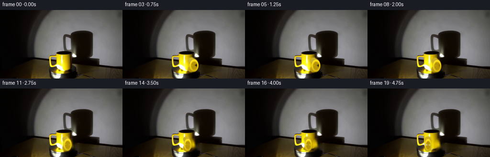
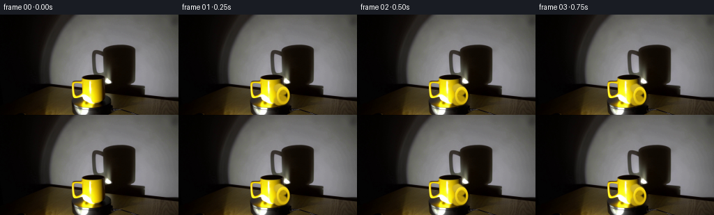
展开代码变化
--- 上一保存版本
+++ 本次保存版本
@@ -0,0 +1,226 @@
+from pathlib import Path
+
+import cv2
+import numpy as np
+from PIL import Image
+
+import artifact_io
+
+
+CASE_DIR = Path(__file__).resolve().parent
+WIDTH, HEIGHT = 256, 144
+FRAME_COUNT, FPS = 20, 4
+SRC = np.asarray(Image.open(CASE_DIR / "first_frame.png").convert("RGB"))
+
+
+def smoothstep(edge0, edge1, value):
+ t = np.clip((value - edge0) / (edge1 - edge0 + 1e-8), 0.0, 1.0)
+ return t * t * (3.0 - 2.0 * t)
+
+
+def soft_ellipse_mask(cx, cy, rx, ry, feather=1.0):
+ yy, xx = np.mgrid[:HEIGHT, :WIDTH]
+ q = np.sqrt(((xx - cx) / rx) ** 2 + ((yy - cy) / ry) ** 2)
+ return 1.0 - smoothstep(1.0 - feather / max(rx, ry), 1.0, q)
+
+
+def make_clean_plate(source):
+ """Remove the visible side handle while preserving the original wall."""
+ mask = np.zeros((HEIGHT, WIDTH), np.uint8)
+ cv2.ellipse(mask, (151, 119), (11, 16), -8, 0, 360, 255, -1)
+ cv2.rectangle(mask, (143, 105), (153, 133), 255, -1)
+ bgr = cv2.cvtColor(source, cv2.COLOR_RGB2BGR)
+ clean = cv2.inpaint(bgr, mask, 4, cv2.INPAINT_TELEA)
+ clean = cv2.cvtColor(clean, cv2.COLOR_BGR2RGB)
+ # The inpaint pass only needs to replace the handle; retain every other pixel.
+ alpha = cv2.GaussianBlur(mask.astype(np.float32) / 255.0, (0, 0), 0.55)
+ alpha = np.clip(alpha * 1.35, 0.0, 1.0)[..., None]
+ return (source * (1.0 - alpha) + clean * alpha).astype(np.uint8)
+
+
+def make_body_mask():
+ mask = np.zeros((HEIGHT, WIDTH), np.uint8)
+ points = np.array(
+ [
+ (105, 98), (109, 95), (116, 93), (124, 92), (133, 93),
+ (140, 95), (144, 98), (146, 103), (146, 111), (146, 119),
+ (145, 126), (142, 130), (136, 132), (128, 133), (120, 132),
+ (113, 129), (108, 125), (105, 119), (103, 111), (103, 103),
+ ],
+ np.int32,
+ )
+ cv2.fillPoly(mask, [points], 255)
+ mask = cv2.GaussianBlur(mask, (0, 0), 0.65)
+ return mask.astype(np.float32) / 255.0
+
+
+BODY_MASK = make_body_mask()
+
+
+def handle_geometry(theta):
+ cos_t, sin_t = np.cos(theta), np.sin(theta)
+ cx, cy = 124.5, 114.5
+ hx = cx + 25.5 * cos_t
+ hy = cy + 1.2 + 2.8 * sin_t
+ rx = 7.0 + 2.8 * abs(cos_t)
+ ry = 13.2
+ return hx, hy, rx, ry, cos_t, sin_t
+
+
+def render_handle_alpha(theta, supersample=4):
+ h, w = HEIGHT * supersample, WIDTH * supersample
+ hx, hy, rx, ry, _, _ = handle_geometry(theta)
+ hx *= supersample
+ hy *= supersample
+ rx *= supersample
+ ry *= supersample
+ yy, xx = np.mgrid[:h, :w].astype(np.float32)
+ q = np.sqrt(((xx - hx) / rx) ** 2 + ((yy - hy) / ry) ** 2)
+
+ outer = 1.0 - smoothstep(0.955, 1.015, q)
+ inner = smoothstep(0.58, 0.68, q)
+ ring = outer * inner
+
+ # Short tangential shoulders join the loop cleanly to the ceramic body.
+ shoulder = np.zeros((h, w), np.uint8)
+ body_x = (124.5 + 19.0 * np.cos(theta)) * supersample
+ top_y = (105.0 + 1.3 * np.sin(theta)) * supersample
+ bottom_y = (124.0 + 1.3 * np.sin(theta)) * supersample
+ cv2.line(shoulder, (int(body_x), int(top_y)), (int(hx), int(hy - 0.52 * ry)),
+ 255, 13 * supersample, cv2.LINE_AA)
+ cv2.line(shoulder, (int(body_x), int(bottom_y)), (int(hx), int(hy + 0.52 * ry)),
+ 255, 13 * supersample, cv2.LINE_AA)
+ shoulder = cv2.GaussianBlur(shoulder, (0, 0), 0.8 * supersample)
+ ring = np.maximum(ring, shoulder.astype(np.float32) / 255.0)
+
+ # Keep the attachment shoulders from leaking too far into the wall.
+ attach = soft_ellipse_mask(
+ 124.5 + 25.0 * np.cos(theta), 114.5 + 2.8 * np.sin(theta),
+ 15.5 + 5.0 * abs(np.cos(theta)), 17.5, feather=1.2
+ )
+ attach = cv2.resize(attach, (w, h), interpolation=cv2.INTER_LINEAR)
+ ring *= attach
+ return cv2.resize(ring, (WIDTH, HEIGHT), interpolation=cv2.INTER_AREA)
+
+
+def draw_handle(frame, theta):
+ alpha = render_handle_alpha(theta)
+ hx, hy, rx, ry, cos_t, sin_t = handle_geometry(theta)
+ yy, xx = np.mgrid[:HEIGHT, :WIDTH].astype(np.float32)
+
+ # A small contact shadow keeps the handle visually seated against the wall.
+ shadow = cv2.GaussianBlur(
+ cv2.warpAffine(alpha, np.float32([[1, 0, 1.8], [0, 1, 1.2]]), (WIDTH, HEIGHT)),
+ (0, 0), 1.15,
+ )
+ shadow_alpha = np.clip(shadow * 0.30 * (1.0 - BODY_MASK * 0.42), 0.0, 1.0)[..., None]
+ shadow_color = np.array([22.0, 13.0, 4.0], np.float32)
+ frame_f = frame.astype(np.float32)
+ frame_f = frame_f * (1.0 - shadow_alpha) + shadow_color * shadow_alpha
+
+ # Tube shading: a warm ochre underside, saturated yellow face and a narrow
+ # upper-left highlight make the procedural handle match the ceramic mug.
+ q = np.sqrt(((xx - hx) / rx) ** 2 + ((yy - hy) / ry) ** 2)
+ phi = np.arctan2((yy - hy) / ry, (xx - hx) / rx)
+ tube = np.clip((q - 0.60) / 0.40, 0.0, 1.0)
+ tube_light = np.sin(np.pi * tube) ** 0.55
+ directional = 0.68 + 0.32 * np.cos(phi + 2.15)
+ shade = np.clip(0.52 + 0.58 * tube_light * directional, 0.0, 1.15)
+
+ base = np.array([238.0, 207.0, 18.0], np.float32)
+ dark = np.array([120.0, 83.0, 2.0], np.float32)
+ color = dark[None, None, :] + (base - dark)[None, None, :] * shade[..., None]
+ highlight = (
+ smoothstep(0.79, 0.97, q)
+ * smoothstep(-0.55, 0.85, np.cos(phi + 2.1))
+ * (0.65 + 0.35 * cos_t)
+ )
+ color += np.array([24.0, 30.0, 32.0], np.float32) * highlight[..., None]
+
+ # Slightly brighter leading edge makes the turn legible at this resolution.
+ leading = smoothstep(-0.25, 0.85, np.cos(phi - 0.35 + theta)) * smoothstep(0.35, 0.82, q)
+ color += np.array([12.0, 10.0, 0.0], np.float32) * leading[..., None]
+
+ a = alpha[..., None]
+ frame_f = frame_f * (1.0 - a) + np.clip(color, 0, 255) * a
+ return np.clip(frame_f, 0, 255).astype(np.uint8)
+
+
+def animate_platform(frame, theta):
+ """Add a very restrained rotating sheen to the black turntable."""
+ yy, xx = np.mgrid[:HEIGHT, :WIDTH].astype(np.float32)
+ cx, cy = 139.0, 137.0
+ rx, ry = 73.0, 17.0
+ q = np.sqrt(((xx - cx) / rx) ** 2 + ((yy - cy) / ry) ** 2)
+ platform = (1.0 - smoothstep(0.90, 1.02, q)) * smoothstep(126.0, 132.0, yy)
+ platform *= 1.0 - BODY_MASK
+
+ phi = np.arctan2((yy - cy) / ry, (xx - cx) / rx)
+ sheen = 0.5 + 0.5 * np.cos(2.0 * phi - 2.0 * theta + 0.55)
+ sheen *= smoothstep(0.15, 0.92, q) * (1.0 - smoothstep(0.93, 1.01, q))
+ gain = 1.0 + 0.045 * sheen * platform
+
+ # A pair of low-contrast reflected glints reinforces the clockwise motion.
+ glints = np.zeros_like(xx)
+ for offset, strength in ((0.0, 0.11), (2.35, 0.065)):
+ gx = cx + 48.0 * np.cos(theta + offset)
+ gy = cy + 9.0 * np.sin(theta + offset)
+ glints += strength * np.exp(-(((xx - gx) / 10.0) ** 2 + ((yy - gy) / 2.2) ** 2))
+ gain += glints * platform
+
+ return np.clip(frame.astype(np.float32) * gain[..., None], 0, 255).astype(np.uint8)
+
+
+def animate_shadow(frame, theta):
+ """Move the large wall shadow by a sub-pixel amount and shade the handle lobe."""
+ yy, xx = np.mgrid[:HEIGHT, :WIDTH].astype(np.float32)
+ luma = frame.astype(np.float32) @ np.array([0.2126, 0.7152, 0.0722], np.float32)
+ region = (
+ smoothstep(128.0, 142.0, xx)
+ * smoothstep(40.0, 50.0, yy)
+ * (1.0 - smoothstep(238.0, 255.0, xx))
+ * (1.0 - smoothstep(126.0, 140.0, yy))
+ * (1.0 - smoothstep(80.0, 115.0, luma))
+ * (1.0 - BODY_MASK)
+ )
+ region = cv2.GaussianBlur(region.astype(np.float32), (0, 0), 2.5)
+
+ amount = 0.75 * (1.0 - np.cos(theta))
+ map_x = (xx - amount).astype(np.float32)
+ map_y = (yy + 0.10 * amount).astype(np.float32)
+ warped = cv2.remap(
+ frame, map_x, map_y, interpolation=cv2.INTER_LINEAR,
+ borderMode=cv2.BORDER_REFLECT_101,
+ ).astype(np.float32)
+ out = frame.astype(np.float32) * (1.0 - region[..., None]) + warped * region[..., None]
+
+ hx, hy, _, _, _, _ = handle_geometry(theta)
+ lobe = np.exp(-(((xx - (hx + 7.0)) / 8.5) ** 2 + ((yy - (hy + 5.0)) / 12.0) ** 2))
+ lobe *= region * 0.055
+ out *= (1.0 - lobe[..., None])
+ return np.clip(out, 0, 255).astype(np.uint8)
+
+
+def generate_frames():
+ source = SRC.copy()
+ clean_plate = make_clean_plate(source)
+ frames = [source]
+ max_angle = np.deg2rad(86.0)
+
+ for index in range(1, FRAME_COUNT):
+ theta = max_angle * index / (FRAME_COUNT - 1)
+ frame = clean_plate.copy()
+ frame = animate_platform(frame, theta)
+ frame = animate_shadow(frame, theta)
+ frame = draw_handle(frame, theta)
+ frames.append(frame)
+
+ return np.stack(frames).astype(np.uint8)
+
+
+if __name__ == "__main__":
+ generated = generate_frames()
+ assert generated.shape == (FRAME_COUNT, HEIGHT, WIDTH, 3)
+ assert np.array_equal(generated[0], SRC)
+ artifact_io.save(generated, CASE_DIR)
+ print(f"saved {generated.shape} at {FPS} fps to {CASE_DIR}")
候选 02播放与检查图
点击播放 · 原生 RGB 像素
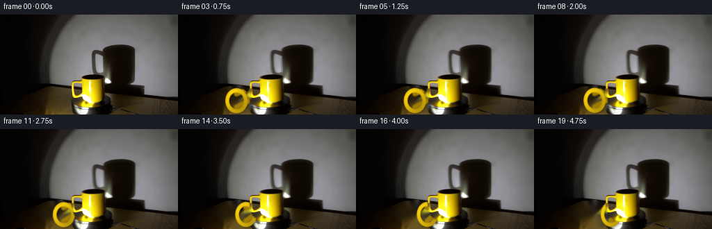
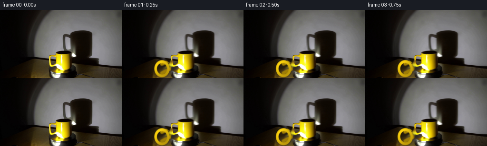
展开代码变化
--- 上一保存版本
+++ 本次保存版本
@@ -11,6 +11,8 @@
WIDTH, HEIGHT = 256, 144
FRAME_COUNT, FPS = 20, 4
SRC = np.asarray(Image.open(CASE_DIR / "first_frame.png").convert("RGB"))
+HANDLE_START = np.deg2rad(168.0)
+HANDLE_TURN = np.deg2rad(82.0)
def smoothstep(edge0, edge1, value):
@@ -25,10 +27,10 @@
def make_clean_plate(source):
- """Remove the visible side handle while preserving the original wall."""
+ """Remove the lower-left handle while preserving the original wall."""
mask = np.zeros((HEIGHT, WIDTH), np.uint8)
- cv2.ellipse(mask, (151, 119), (11, 16), -8, 0, 360, 255, -1)
- cv2.rectangle(mask, (143, 105), (153, 133), 255, -1)
+ cv2.ellipse(mask, (84, 123), (17, 21), 2, 0, 360, 255, -1)
+ cv2.rectangle(mask, (93, 106), (105, 136), 255, -1)
bgr = cv2.cvtColor(source, cv2.COLOR_RGB2BGR)
clean = cv2.inpaint(bgr, mask, 4, cv2.INPAINT_TELEA)
clean = cv2.cvtColor(clean, cv2.COLOR_BGR2RGB)
@@ -59,11 +61,11 @@
def handle_geometry(theta):
cos_t, sin_t = np.cos(theta), np.sin(theta)
- cx, cy = 124.5, 114.5
- hx = cx + 25.5 * cos_t
- hy = cy + 1.2 + 2.8 * sin_t
- rx = 7.0 + 2.8 * abs(cos_t)
- ry = 13.2
+ cx, cy = 124.5, 113.5
+ hx = cx + 40.5 * cos_t
+ hy = cy + 10.5 + 1.5 * sin_t
+ rx = 14.5 + 2.0 * abs(cos_t)
+ ry = 18.5
return hx, hy, rx, ry, cos_t, sin_t
@@ -83,23 +85,25 @@
# Short tangential shoulders join the loop cleanly to the ceramic body.
shoulder = np.zeros((h, w), np.uint8)
- body_x = (124.5 + 19.0 * np.cos(theta)) * supersample
- top_y = (105.0 + 1.3 * np.sin(theta)) * supersample
- bottom_y = (124.0 + 1.3 * np.sin(theta)) * supersample
+ body_x = (124.5 + 20.0 * np.cos(theta)) * supersample
+ top_y = (106.0 + 1.3 * np.sin(theta)) * supersample
+ bottom_y = (123.0 + 1.3 * np.sin(theta)) * supersample
cv2.line(shoulder, (int(body_x), int(top_y)), (int(hx), int(hy - 0.52 * ry)),
- 255, 13 * supersample, cv2.LINE_AA)
+ 255, 7 * supersample, cv2.LINE_AA)
cv2.line(shoulder, (int(body_x), int(bottom_y)), (int(hx), int(hy + 0.52 * ry)),
- 255, 13 * supersample, cv2.LINE_AA)
+ 255, 7 * supersample, cv2.LINE_AA)
shoulder = cv2.GaussianBlur(shoulder, (0, 0), 0.8 * supersample)
ring = np.maximum(ring, shoulder.astype(np.float32) / 255.0)
# Keep the attachment shoulders from leaking too far into the wall.
attach = soft_ellipse_mask(
- 124.5 + 25.0 * np.cos(theta), 114.5 + 2.8 * np.sin(theta),
- 15.5 + 5.0 * abs(np.cos(theta)), 17.5, feather=1.2
+ 124.5 + 40.0 * np.cos(theta), 113.5 + 10.5 + 1.5 * np.sin(theta),
+ 16.0 + 3.0 * abs(np.cos(theta)), 20.0, feather=1.2
)
attach = cv2.resize(attach, (w, h), interpolation=cv2.INTER_LINEAR)
ring *= attach
+ body_hi = cv2.resize(BODY_MASK, (w, h), interpolation=cv2.INTER_LINEAR)
+ ring *= 1.0 - body_hi * 0.985
return cv2.resize(ring, (WIDTH, HEIGHT), interpolation=cv2.INTER_AREA)
@@ -127,15 +131,15 @@
directional = 0.68 + 0.32 * np.cos(phi + 2.15)
shade = np.clip(0.52 + 0.58 * tube_light * directional, 0.0, 1.15)
- base = np.array([238.0, 207.0, 18.0], np.float32)
- dark = np.array([120.0, 83.0, 2.0], np.float32)
+ base = np.array([229.0, 190.0, 11.0], np.float32)
+ dark = np.array([83.0, 56.0, 1.0], np.float32)
color = dark[None, None, :] + (base - dark)[None, None, :] * shade[..., None]
highlight = (
smoothstep(0.79, 0.97, q)
* smoothstep(-0.55, 0.85, np.cos(phi + 2.1))
* (0.65 + 0.35 * cos_t)
)
- color += np.array([24.0, 30.0, 32.0], np.float32) * highlight[..., None]
+ color += np.array([18.0, 22.0, 20.0], np.float32) * highlight[..., None]
# Slightly brighter leading edge makes the turn legible at this resolution.
leading = smoothstep(-0.25, 0.85, np.cos(phi - 0.35 + theta)) * smoothstep(0.35, 0.82, q)
@@ -176,18 +180,18 @@
yy, xx = np.mgrid[:HEIGHT, :WIDTH].astype(np.float32)
luma = frame.astype(np.float32) @ np.array([0.2126, 0.7152, 0.0722], np.float32)
region = (
- smoothstep(128.0, 142.0, xx)
+ smoothstep(70.0, 90.0, xx)
+ * (1.0 - smoothstep(226.0, 248.0, xx))
* smoothstep(40.0, 50.0, yy)
- * (1.0 - smoothstep(238.0, 255.0, xx))
* (1.0 - smoothstep(126.0, 140.0, yy))
* (1.0 - smoothstep(80.0, 115.0, luma))
* (1.0 - BODY_MASK)
)
region = cv2.GaussianBlur(region.astype(np.float32), (0, 0), 2.5)
- amount = 0.75 * (1.0 - np.cos(theta))
+ amount = 0.95 * (1.0 - np.cos(theta))
map_x = (xx - amount).astype(np.float32)
- map_y = (yy + 0.10 * amount).astype(np.float32)
+ map_y = (yy + 0.08 * amount).astype(np.float32)
warped = cv2.remap(
frame, map_x, map_y, interpolation=cv2.INTER_LINEAR,
borderMode=cv2.BORDER_REFLECT_101,
@@ -195,7 +199,7 @@
out = frame.astype(np.float32) * (1.0 - region[..., None]) + warped * region[..., None]
hx, hy, _, _, _, _ = handle_geometry(theta)
- lobe = np.exp(-(((xx - (hx + 7.0)) / 8.5) ** 2 + ((yy - (hy + 5.0)) / 12.0) ** 2))
+ lobe = np.exp(-(((xx - (hx - 4.0)) / 11.0) ** 2 + ((yy - (hy + 7.0)) / 15.0) ** 2))
lobe *= region * 0.055
out *= (1.0 - lobe[..., None])
return np.clip(out, 0, 255).astype(np.uint8)
@@ -205,10 +209,10 @@
source = SRC.copy()
clean_plate = make_clean_plate(source)
frames = [source]
- max_angle = np.deg2rad(86.0)
+ max_angle = HANDLE_TURN
for index in range(1, FRAME_COUNT):
- theta = max_angle * index / (FRAME_COUNT - 1)
+ theta = HANDLE_START + max_angle * index / (FRAME_COUNT - 1)
frame = clean_plate.copy()
frame = animate_platform(frame, theta)
frame = animate_shadow(frame, theta)
候选 03播放与检查图
点击播放 · 原生 RGB 像素
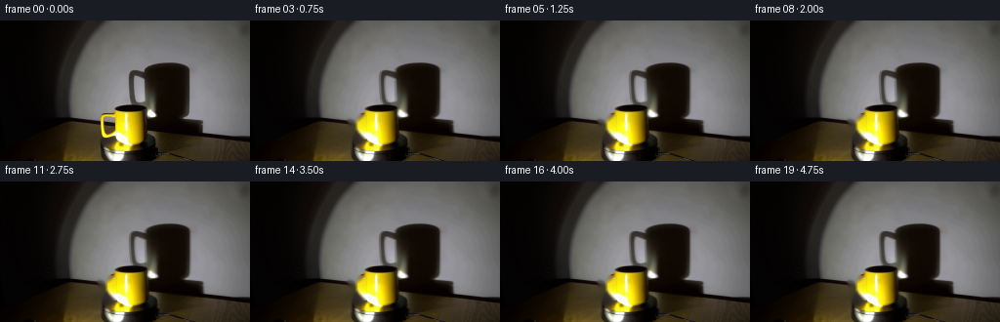
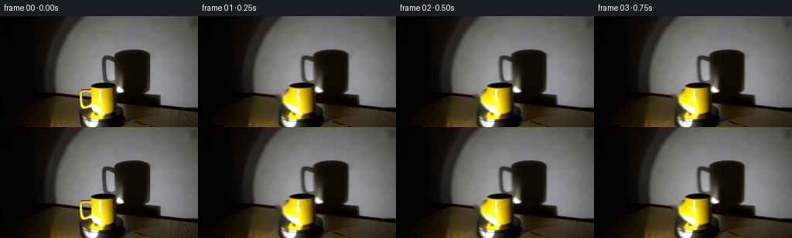
展开代码变化
--- 上一保存版本
+++ 本次保存版本
@@ -11,8 +11,8 @@
WIDTH, HEIGHT = 256, 144
FRAME_COUNT, FPS = 20, 4
SRC = np.asarray(Image.open(CASE_DIR / "first_frame.png").convert("RGB"))
-HANDLE_START = np.deg2rad(168.0)
-HANDLE_TURN = np.deg2rad(82.0)
+HANDLE_START = np.deg2rad(165.0)
+HANDLE_TURN = np.deg2rad(70.0)
def smoothstep(edge0, edge1, value):
@@ -27,10 +27,10 @@
def make_clean_plate(source):
- """Remove the lower-left handle while preserving the original wall."""
+ """Remove the mug's left-side handle while preserving the wall."""
mask = np.zeros((HEIGHT, WIDTH), np.uint8)
- cv2.ellipse(mask, (84, 123), (17, 21), 2, 0, 360, 255, -1)
- cv2.rectangle(mask, (93, 106), (105, 136), 255, -1)
+ cv2.ellipse(mask, (108, 107), (10, 14), 0, 0, 360, 255, -1)
+ cv2.rectangle(mask, (99, 96), (118, 121), 255, -1)
bgr = cv2.cvtColor(source, cv2.COLOR_RGB2BGR)
clean = cv2.inpaint(bgr, mask, 4, cv2.INPAINT_TELEA)
clean = cv2.cvtColor(clean, cv2.COLOR_BGR2RGB)
@@ -44,10 +44,10 @@
mask = np.zeros((HEIGHT, WIDTH), np.uint8)
points = np.array(
[
- (105, 98), (109, 95), (116, 93), (124, 92), (133, 93),
- (140, 95), (144, 98), (146, 103), (146, 111), (146, 119),
- (145, 126), (142, 130), (136, 132), (128, 133), (120, 132),
- (113, 129), (108, 125), (105, 119), (103, 111), (103, 103),
+ (117, 98), (121, 95), (128, 93), (135, 94), (141, 97),
+ (145, 101), (146, 107), (146, 114), (145, 121), (143, 127),
+ (139, 131), (133, 133), (127, 133), (121, 131), (116, 127),
+ (113, 121), (112, 114), (112, 107), (114, 102),
],
np.int32,
)
@@ -61,11 +61,11 @@
def handle_geometry(theta):
cos_t, sin_t = np.cos(theta), np.sin(theta)
- cx, cy = 124.5, 113.5
- hx = cx + 40.5 * cos_t
- hy = cy + 10.5 + 1.5 * sin_t
- rx = 14.5 + 2.0 * abs(cos_t)
- ry = 18.5
+ cx = 130.0
+ hx = cx + 25.5 * cos_t
+ hy = 106.0 + 1.0 * sin_t
+ rx = 8.3
+ ry = 11.5
return hx, hy, rx, ry, cos_t, sin_t
@@ -85,20 +85,19 @@
# Short tangential shoulders join the loop cleanly to the ceramic body.
shoulder = np.zeros((h, w), np.uint8)
- body_x = (124.5 + 20.0 * np.cos(theta)) * supersample
- top_y = (106.0 + 1.3 * np.sin(theta)) * supersample
- bottom_y = (123.0 + 1.3 * np.sin(theta)) * supersample
+ body_x = 115.5 * supersample
+ top_y = 98.0 * supersample
+ bottom_y = 116.5 * supersample
cv2.line(shoulder, (int(body_x), int(top_y)), (int(hx), int(hy - 0.52 * ry)),
- 255, 7 * supersample, cv2.LINE_AA)
+ 255, 6 * supersample, cv2.LINE_AA)
cv2.line(shoulder, (int(body_x), int(bottom_y)), (int(hx), int(hy + 0.52 * ry)),
- 255, 7 * supersample, cv2.LINE_AA)
+ 255, 6 * supersample, cv2.LINE_AA)
shoulder = cv2.GaussianBlur(shoulder, (0, 0), 0.8 * supersample)
ring = np.maximum(ring, shoulder.astype(np.float32) / 255.0)
# Keep the attachment shoulders from leaking too far into the wall.
attach = soft_ellipse_mask(
- 124.5 + 40.0 * np.cos(theta), 113.5 + 10.5 + 1.5 * np.sin(theta),
- 16.0 + 3.0 * abs(np.cos(theta)), 20.0, feather=1.2
+ hx, hy, 10.0, 14.5, feather=1.2
)
attach = cv2.resize(attach, (w, h), interpolation=cv2.INTER_LINEAR)
ring *= attach
@@ -205,6 +204,28 @@
return np.clip(out, 0, 255).astype(np.uint8)
+def add_body_turn(frame, theta):
+ """Shift a restrained highlight across the mug face as it turns clockwise."""
+ yy, xx = np.mgrid[:HEIGHT, :WIDTH].astype(np.float32)
+ body = BODY_MASK
+ phase = theta - HANDLE_START
+ sweep = np.cos(phase - 0.25)
+ stripe_x = 127.0 + 8.5 * np.sin(phase)
+ stripe = np.exp(-((xx - stripe_x) / 4.2) ** 2)
+ stripe *= smoothstep(99.0, 108.0, yy) * (1.0 - smoothstep(124.0, 132.0, yy))
+ stripe *= body
+ gain = 1.0 + 0.075 * stripe * (0.55 + 0.45 * sweep)
+
+ # The visible left edge is slightly warmer on the forward half of the turn.
+ edge = np.exp(-((xx - 114.0) / 2.3) ** 2)
+ edge *= smoothstep(100.0, 110.0, yy) * (1.0 - smoothstep(124.0, 130.0, yy))
+ edge *= body * max(0.0, np.sin(phase))
+ warm = np.array([1.0, 0.78, 0.62], np.float32)
+ out = frame.astype(np.float32) * gain[..., None]
+ out += warm[None, None, :] * (edge * 2.0)[..., None]
+ return np.clip(out, 0, 255).astype(np.uint8)
+
+
def generate_frames():
source = SRC.copy()
clean_plate = make_clean_plate(source)
@@ -216,6 +237,7 @@
frame = clean_plate.copy()
frame = animate_platform(frame, theta)
frame = animate_shadow(frame, theta)
+ frame = add_body_turn(frame, theta)
frame = draw_handle(frame, theta)
frames.append(frame)
候选 04播放与检查图
点击播放 · 原生 RGB 像素
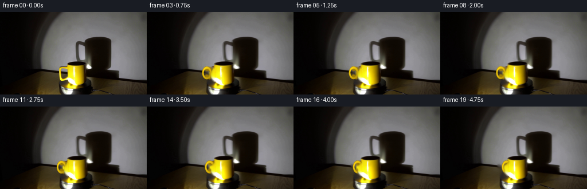
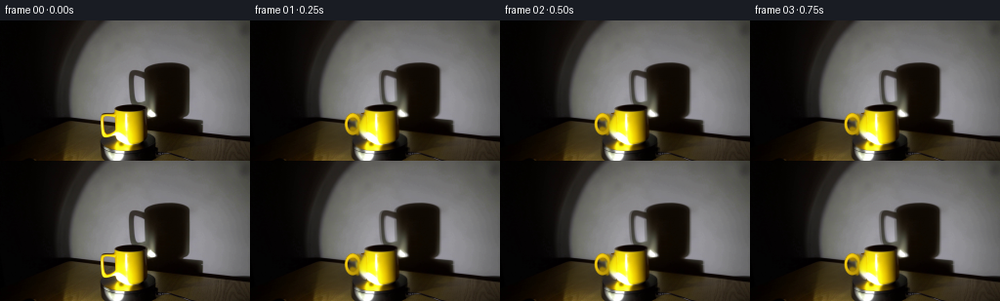
展开代码变化
--- 上一保存版本
+++ 本次保存版本
@@ -71,7 +71,11 @@
def render_handle_alpha(theta, supersample=4):
h, w = HEIGHT * supersample, WIDTH * supersample
- hx, hy, rx, ry, _, _ = handle_geometry(theta)
+ hx_low, hy_low, rx_low, ry_low, _, _ = handle_geometry(theta)
+ attach = soft_ellipse_mask(hx_low, hy_low, 10.0, 14.5, feather=1.2)
+ attach = cv2.resize(attach, (w, h), interpolation=cv2.INTER_LINEAR)
+
+ hx, hy, rx, ry = hx_low, hy_low, rx_low, ry_low
hx *= supersample
hy *= supersample
rx *= supersample
@@ -96,10 +100,6 @@
ring = np.maximum(ring, shoulder.astype(np.float32) / 255.0)
# Keep the attachment shoulders from leaking too far into the wall.
- attach = soft_ellipse_mask(
- hx, hy, 10.0, 14.5, feather=1.2
- )
- attach = cv2.resize(attach, (w, h), interpolation=cv2.INTER_LINEAR)
ring *= attach
body_hi = cv2.resize(BODY_MASK, (w, h), interpolation=cv2.INTER_LINEAR)
ring *= 1.0 - body_hi * 0.985
候选 05播放与检查图
点击播放 · 原生 RGB 像素
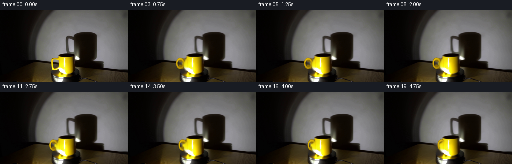
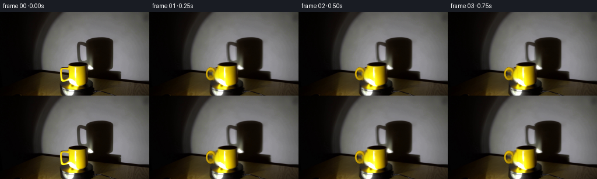
展开代码变化
--- 上一保存版本
+++ 本次保存版本
@@ -130,19 +130,19 @@
directional = 0.68 + 0.32 * np.cos(phi + 2.15)
shade = np.clip(0.52 + 0.58 * tube_light * directional, 0.0, 1.15)
- base = np.array([229.0, 190.0, 11.0], np.float32)
- dark = np.array([83.0, 56.0, 1.0], np.float32)
+ base = np.array([207.0, 168.0, 8.0], np.float32)
+ dark = np.array([70.0, 47.0, 1.0], np.float32)
color = dark[None, None, :] + (base - dark)[None, None, :] * shade[..., None]
highlight = (
smoothstep(0.79, 0.97, q)
* smoothstep(-0.55, 0.85, np.cos(phi + 2.1))
* (0.65 + 0.35 * cos_t)
)
- color += np.array([18.0, 22.0, 20.0], np.float32) * highlight[..., None]
+ color += np.array([12.0, 15.0, 12.0], np.float32) * highlight[..., None]
# Slightly brighter leading edge makes the turn legible at this resolution.
leading = smoothstep(-0.25, 0.85, np.cos(phi - 0.35 + theta)) * smoothstep(0.35, 0.82, q)
- color += np.array([12.0, 10.0, 0.0], np.float32) * leading[..., None]
+ color += np.array([8.0, 6.0, 0.0], np.float32) * leading[..., None]
a = alpha[..., None]
frame_f = frame_f * (1.0 - a) + np.clip(color, 0, 255) * a
候选 06播放与检查图
点击播放 · 原生 RGB 像素
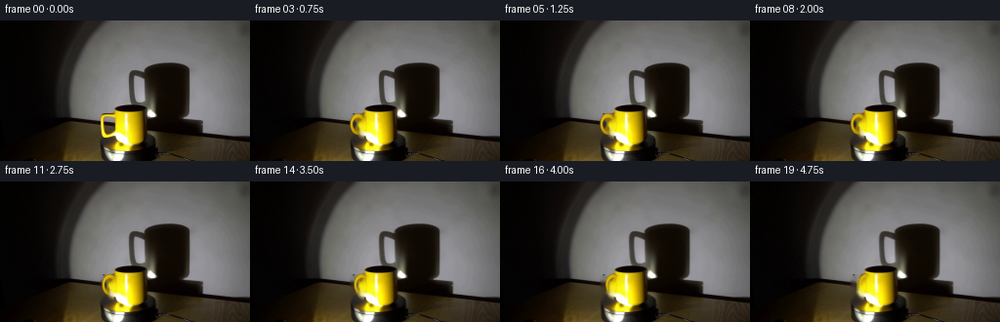
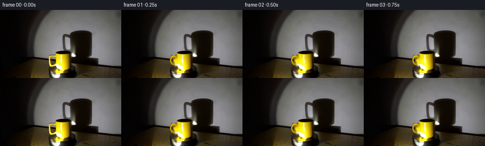
展开代码变化
--- 上一保存版本
+++ 本次保存版本
@@ -29,8 +29,8 @@
def make_clean_plate(source):
"""Remove the mug's left-side handle while preserving the wall."""
mask = np.zeros((HEIGHT, WIDTH), np.uint8)
- cv2.ellipse(mask, (108, 107), (10, 14), 0, 0, 360, 255, -1)
- cv2.rectangle(mask, (99, 96), (118, 121), 255, -1)
+ cv2.ellipse(mask, (110, 107), (8, 13), 0, 0, 360, 255, -1)
+ cv2.rectangle(mask, (102, 96), (116, 121), 255, -1)
bgr = cv2.cvtColor(source, cv2.COLOR_RGB2BGR)
clean = cv2.inpaint(bgr, mask, 4, cv2.INPAINT_TELEA)
clean = cv2.cvtColor(clean, cv2.COLOR_BGR2RGB)
@@ -62,10 +62,10 @@
def handle_geometry(theta):
cos_t, sin_t = np.cos(theta), np.sin(theta)
cx = 130.0
- hx = cx + 25.5 * cos_t
+ hx = cx + 20.0 * cos_t
hy = 106.0 + 1.0 * sin_t
- rx = 8.3
- ry = 11.5
+ rx = 7.8
+ ry = 11.0
return hx, hy, rx, ry, cos_t, sin_t
@@ -152,6 +152,8 @@
def animate_platform(frame, theta):
"""Add a very restrained rotating sheen to the black turntable."""
yy, xx = np.mgrid[:HEIGHT, :WIDTH].astype(np.float32)
+ phase = theta - HANDLE_START
+ fade = smoothstep(0.0, 0.16, phase)
cx, cy = 139.0, 137.0
rx, ry = 73.0, 17.0
q = np.sqrt(((xx - cx) / rx) ** 2 + ((yy - cy) / ry) ** 2)
@@ -159,17 +161,17 @@
platform *= 1.0 - BODY_MASK
phi = np.arctan2((yy - cy) / ry, (xx - cx) / rx)
- sheen = 0.5 + 0.5 * np.cos(2.0 * phi - 2.0 * theta + 0.55)
+ sheen = 0.5 + 0.5 * np.cos(2.0 * phi - 2.0 * phase + 0.55)
sheen *= smoothstep(0.15, 0.92, q) * (1.0 - smoothstep(0.93, 1.01, q))
- gain = 1.0 + 0.045 * sheen * platform
+ gain = 1.0 + 0.045 * sheen * platform * fade
# A pair of low-contrast reflected glints reinforces the clockwise motion.
glints = np.zeros_like(xx)
for offset, strength in ((0.0, 0.11), (2.35, 0.065)):
- gx = cx + 48.0 * np.cos(theta + offset)
- gy = cy + 9.0 * np.sin(theta + offset)
+ gx = cx + 48.0 * np.cos(phase + offset)
+ gy = cy + 9.0 * np.sin(phase + offset)
glints += strength * np.exp(-(((xx - gx) / 10.0) ** 2 + ((yy - gy) / 2.2) ** 2))
- gain += glints * platform
+ gain += glints * platform * fade
return np.clip(frame.astype(np.float32) * gain[..., None], 0, 255).astype(np.uint8)
@@ -188,7 +190,8 @@
)
region = cv2.GaussianBlur(region.astype(np.float32), (0, 0), 2.5)
- amount = 0.95 * (1.0 - np.cos(theta))
+ phase = theta - HANDLE_START
+ amount = 0.95 * (1.0 - np.cos(phase))
map_x = (xx - amount).astype(np.float32)
map_y = (yy + 0.08 * amount).astype(np.float32)
warped = cv2.remap(
@@ -199,7 +202,7 @@
hx, hy, _, _, _, _ = handle_geometry(theta)
lobe = np.exp(-(((xx - (hx - 4.0)) / 11.0) ** 2 + ((yy - (hy + 7.0)) / 15.0) ** 2))
- lobe *= region * 0.055
+ lobe *= region * 0.055 * smoothstep(0.0, 0.18, phase)
out *= (1.0 - lobe[..., None])
return np.clip(out, 0, 255).astype(np.uint8)
@@ -209,12 +212,13 @@
yy, xx = np.mgrid[:HEIGHT, :WIDTH].astype(np.float32)
body = BODY_MASK
phase = theta - HANDLE_START
+ fade = smoothstep(0.0, 0.16, phase)
sweep = np.cos(phase - 0.25)
stripe_x = 127.0 + 8.5 * np.sin(phase)
stripe = np.exp(-((xx - stripe_x) / 4.2) ** 2)
stripe *= smoothstep(99.0, 108.0, yy) * (1.0 - smoothstep(124.0, 132.0, yy))
stripe *= body
- gain = 1.0 + 0.075 * stripe * (0.55 + 0.45 * sweep)
+ gain = 1.0 + 0.075 * stripe * (0.55 + 0.45 * sweep) * fade
# The visible left edge is slightly warmer on the forward half of the turn.
edge = np.exp(-((xx - 114.0) / 2.3) ** 2)
@@ -222,7 +226,7 @@
edge *= body * max(0.0, np.sin(phase))
warm = np.array([1.0, 0.78, 0.62], np.float32)
out = frame.astype(np.float32) * gain[..., None]
- out += warm[None, None, :] * (edge * 2.0)[..., None]
+ out += warm[None, None, :] * (edge * 2.0 * fade)[..., None]
return np.clip(out, 0, 255).astype(np.uint8)
候选 07播放与检查图
点击播放 · 原生 RGB 像素
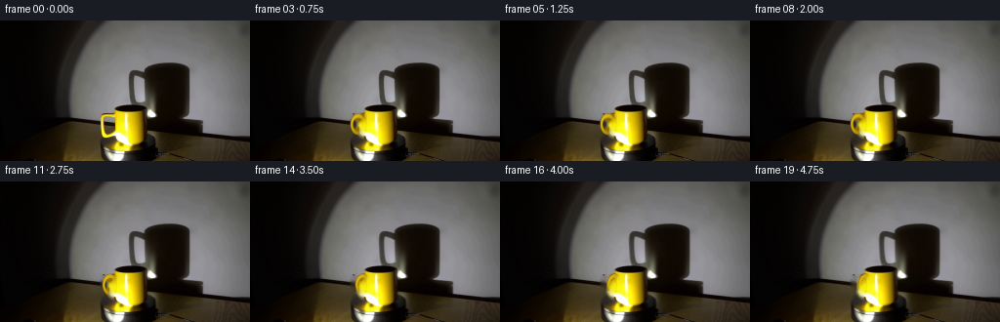
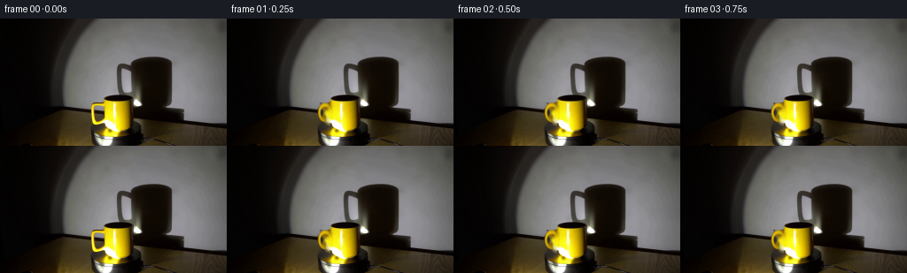
展开代码变化
--- 上一保存版本
+++ 本次保存版本
@@ -237,7 +237,8 @@
max_angle = HANDLE_TURN
for index in range(1, FRAME_COUNT):
- theta = HANDLE_START + max_angle * index / (FRAME_COUNT - 1)
+ progress = smoothstep(0.0, 1.0, index / (FRAME_COUNT - 1))
+ theta = HANDLE_START + max_angle * progress
frame = clean_plate.copy()
frame = animate_platform(frame, theta)
frame = animate_shadow(frame, theta)
候选 08播放与检查图
点击播放 · 原生 RGB 像素
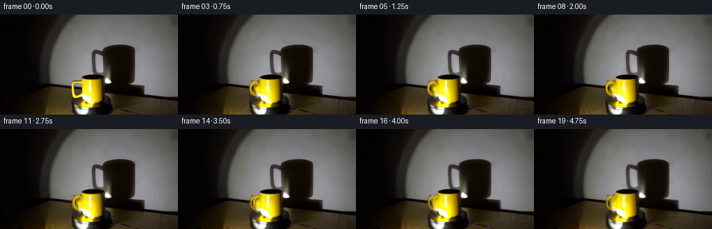
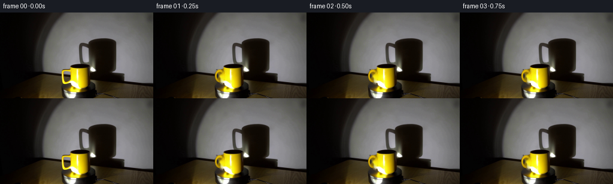
展开代码变化
--- 上一保存版本
+++ 本次保存版本
@@ -235,6 +235,13 @@
clean_plate = make_clean_plate(source)
frames = [source]
max_angle = HANDLE_TURN
+ start_handle = draw_handle(clean_plate.copy(), HANDLE_START)
+ handle_alpha = render_handle_alpha(HANDLE_START)
+ seed = np.clip(handle_alpha * 0.72, 0.0, 1.0)[..., None]
+ clean_plate = (
+ clean_plate.astype(np.float32) * (1.0 - seed)
+ + start_handle.astype(np.float32) * seed
+ ).astype(np.uint8)
for index in range(1, FRAME_COUNT):
progress = smoothstep(0.0, 1.0, index / (FRAME_COUNT - 1))
可观测工具轨迹
实际执行的命令与返回图片。
命令 1exit 0
/bin/bash -c "pwd && rg --files -g '"'!**/.git/**'"' | sed -n '1,160p'"
命令 2exit 0
/bin/bash -c "sed -n '1,240p' GENERATION_RULES.md"
命令 3exit 0
/bin/bash -c "sed -n '1,240p' prompt.txt"
命令 4exit 0
/bin/bash -c 'file first_frame.png 2>/dev/null; identify first_frame.png 2>/dev/null || true; git status --short'
命令 5exit 0
/bin/bash -c "sed -n '1,260p' artifact_io.py"
命令 6exit 0
/bin/bash -c "python - <<'PY'
from PIL import Image
import numpy as np
im=Image.open('first_frame.png').convert('RGB')
a=np.array(im)
print(im.size, a.shape, a.dtype)
print('min/max/mean', a.min(axis=(0,1)), a.max(axis=(0,1)), a.mean(axis=(0,1)))
# brightness stats and coarse ascii
b=a.mean(2)
print('quantiles', np.percentile(b,[0,1,5,10,25,50,75,90,95,99,100]))
chars=' .:-=+*#%@'
for y in range(0,144,6):
print(''.join(chars[min(9,int(b[y,x]/256*10))] for x in range(0,256,3)))
PY"命令 7exit 0
/bin/bash -c "python - <<'PY'
from PIL import Image
import numpy as np
from collections import Counter
im=np.array(Image.open('first_frame.png').convert('RGB'))
# top colors exact and quantized
c=Counter(map(tuple,im.reshape(-1,3)))
print('top exact')
for rgb,n in c.most_common(30): print(rgb,n)
q=(im//16)*16+8
cq=Counter(map(tuple,q.reshape(-1,3)))
print('top quantized')
for rgb,n in cq.most_common(30): print(rgb,n)
# yellow-like masks
r,g,b=im[:,:,0],im[:,:,1],im[:,:,2]
for name,m in [('yellow',(r>100)&(g>65)&(r>b*1.4)&(g>b*1.15)),('white',(r>150)&(g>150)&(b>150)),('black',(r<25)&(g<25)&(b<25)),('orange',(r>120)&(g<130)&(b<80))]:
ys,xs=np.where(m)
print(name,len(xs), (xs.min(),xs.max(),ys.min(),ys.max()) if len(xs) else None)
PY"命令 8exit 0
/bin/bash -c "python - <<'PY'
from PIL import Image
import numpy as np
im=np.array(Image.open('first_frame.png').convert('RGB'))
# 4x4 average brightness/color as coarse map, 64 cols x36 rows
for y in range(0,144,4):
line=''
for x in range(0,256,4):
p=im[y:y+4,x:x+4].mean((0,1))
if p.max()<20: ch=' '
elif p.mean()>210: ch='W'
elif p.mean()>160: ch='#'
elif p.mean()>110: ch='O'
elif p.mean()>60: ch='o'
elif p.mean()>30: ch='.'
else: ch=','
# yellow marker
if p[0]>p[2]*1.45 and p[1]>p[2]*1.2 and p[0]>50: ch='Y'
line+=ch
print(f'{y:3d} '+line)
PY"命令 9exit 0
/bin/bash -c "python - <<'PY' mods=['cv2','scipy','skimage','numpy','PIL'] for m in mods: try: x=__import__(m); print(m, getattr(x,'__version__','ok')) except Exception as e: print(m, type(e).__name__, e) PY"
命令 10exit 0
/bin/bash -c "python - <<'PY'
from PIL import Image
import numpy as np
im=np.array(Image.open('first_frame.png').convert('RGB'))
# print representative RGB at grid points
for y in range(8,144,8):
vals=[]
for x in range(8,256,8):
p=im[y,x]
vals.append('%02x%02x%02x'%tuple(p))
print(y,' '.join(vals))
PY"命令 11exit 0
/bin/bash -c "python - <<'PY'
import cv2, numpy as np
im=cv2.imread('first_frame.png')
hsv=cv2.cvtColor(im,cv2.COLOR_BGR2HSV)
# Connected components for likely yellow/orange in OpenCV HSV H 5-40, sat>70, val>40
for lo,hi,s,v in [(5,40,70,40),(8,35,50,40),(0,45,40,30),(15,40,90,50)]:
m=((hsv[:,:,0]>=lo)&(hsv[:,:,0]<=hi)&(hsv[:,:,1]>=s)&(hsv[:,:,2]>=v)).astype(np.uint8)
m=cv2.morphologyEx(m,cv2.MORPH_OPEN,np.ones((2,2),np.uint8))
n,lab,stats,cent=cv2.connectedComponentsWithStats(m,8)
print('\\nparams',lo,hi,s,v,'total',m.sum())
for i in np.argsort(stats[1:,4])[::-1][:15]+1:
x,y,w,h,a=stats[i]; print(i,'bbox',x,y,w,h,'area',a,'cent',cent[i])
PY"命令 12exit 0
/bin/bash -c "python - <<'PY'
import cv2,numpy as np
im=cv2.imread('first_frame.png'); hsv=cv2.cvtColor(im,cv2.COLOR_BGR2HSV)
# count yellow-like per columns/rows around mug
m=((hsv[:,:,0]>=5)&(hsv[:,:,0]<=40)&(hsv[:,:,1]>=70)&(hsv[:,:,2]>=40)).astype(np.uint8)
for y in range(85,144,2):
xs=np.where(m[y])[0]
if len(xs): print('y',y,'x',xs.min(),xs.max(),'n',len(xs),'runs', end=' ')
# runs
if len(xs):
runs=[]; st=xs[0]; pr=xs[0]
for x in xs[1:]:
if x>pr+1: runs.append((st,pr));st=x
pr=x
runs.append((st,pr)); print(runs)
else: print()
PY"命令 13exit 0
/bin/bash -c "python - <<'PY'
from PIL import Image
import numpy as np
im=np.array(Image.open('first_frame.png').convert('RGB'))
# compute avg color blocks for 32x18 grid to reveal scene composition
for y in range(0,144,8):
line=[]
for x in range(0,256,8):
p=im[y:y+8,x:x+8].mean((0,1)).astype(int)
line.append('%02x%02x%02x'%tuple(p))
print(f'{y:3d}: '+' '.join(line))
PY"命令 14exit 0
/bin/bash -c "ls -la .tmp 2>/dev/null || true; du -sh .; python - <<'PY'
from PIL import Image
import numpy as np
im=np.array(Image.open('first_frame.png').convert('RGB'))
# detailed rows threshold visualization in mug region x=50..250 y=85..143, 2x2 chars
for y in range(84,144,2):
line=''
for x in range(48,256,2):
p=im[y:y+2,x:x+2].mean((0,1))
r,g,b=p
if max(p)<12: c=' '
elif r>g*1.55 and r>b*1.5 and r>45: c='Y'
elif g>r*1.2 and r>b*1.2 and g>50: c='g'
elif max(p)>200 and min(p)>180: c='W'
elif max(p)>120 and (max(p)-min(p)<18): c='H'
elif max(p)>65: c='+'
elif max(p)>30: c='.'
else: c=','
line+=c
print(f'{y:3d} {line}')
PY"命令 15exit 0
/bin/bash -c "python - <<'PY'
import cv2,numpy as np
im=cv2.imread('first_frame.png'); rgb=im[:,:,::-1]; hsv=cv2.cvtColor(im,cv2.COLOR_BGR2HSV)
r,g,b=rgb.transpose(2,0,1)
masks={
'bright_neutral': ((r>100)&(g>100)&(b>100)&(np.max(rgb,2)-np.min(rgb,2)<25)),
'white': ((r>190)&(g>190)&(b>190)),
'metal': ((r>80)&(g>80)&(b>80)&(np.max(rgb,2)-np.min(rgb,2)<18)),
'dark': ((r<35)&(g<35)&(b<35)),
'warm_dark': ((r>25)&(r>g*1.2)&(g>b*1.15)&(r<180)),
}
for name,m in masks.items():
m=m.astype(np.uint8); n,lab,stats,cent=cv2.connectedComponentsWithStats(m,8)
print('\\n',name,'total',m.sum(),'components',n-1)
for i in np.argsort(stats[1:,4])[::-1][:12]+1:
x,y,w,h,a=stats[i]; print(' bbox',x,y,w,h,'area',a,'cent',np.round(cent[i],1))
PY"命令 16exit 0
/bin/bash -c "python - <<'PY'
import cv2,numpy as np
from collections import Counter
im=cv2.imread('first_frame.png'); hsv=cv2.cvtColor(im,cv2.COLOR_BGR2HSV)
# quantized hsv region y85+
reg=hsv[85:,:]
q=np.stack([(reg[:,:,0]//5)*5,(reg[:,:,1]//20)*20,(reg[:,:,2]//20)*20],2)
c=Counter(map(tuple,q.reshape(-1,3)))
for hsvc,n in c.most_common(40): print(hsvc,n)
# bins of H for saturated
m=reg[:,:,1]>100
hh=reg[:,:,0][m]
print('sat100',m.sum(),'hue percentiles',np.percentile(hh,[0,1,5,10,25,50,75,90,95,99,100]))
PY"命令 17exit 0
/bin/bash -c "python - <<'PY'
import cv2,numpy as np
im=cv2.imread('first_frame.png'); rgb=im[:,:,::-1].astype(float)
g=cv2.cvtColor(im,cv2.COLOR_BGR2GRAY)
# Sobel magnitude after blur, sample 2px cells, log chars
s=cv2.Sobel(cv2.GaussianBlur(g,(3,3),0),cv2.CV_32F,1,0,ksize=3)
t=cv2.Sobel(cv2.GaussianBlur(g,(3,3),0),cv2.CV_32F,0,1,ksize=3)
mag=np.hypot(s,t)
chars=' .:-=+*#%@'
for y in range(0,144,2):
line=''
for x in range(0,256,2):
v=mag[y:y+2,x:x+2].max()
line+=chars[min(9,int((v/800)**0.5*10))]
print(f'{y:3d} {line}')
PY"命令 18exit 0
/bin/bash -c "python - <<'PY'
from PIL import Image
import numpy as np
im=np.array(Image.open('first_frame.png').convert('RGB'))
# mug bbox candidate inspect boundary and color, x=55..175, y=88..144
# approximate segmentation by hue/sat and y
r,g,b=im[:,:,0].astype(int),im[:,:,1].astype(int),im[:,:,2].astype(int)
hsv=np.array(Image.open('first_frame.png').convert('HSV'))
h,s,v=hsv[:,:,0],hsv[:,:,1],hsv[:,:,2]
for mname,m in [('mug', (h>=5)&(h<=42)&(s>=60)&(v>=35)&(np.indices(h.shape)[0]>=88)),('shadow', (h>=5)&(h<=42)&(s>=40)&(v>=15)&(np.indices(h.shape)[0]>=88))]:
ys,xs=np.where(m)
print(mname, xs.min(),xs.max(),ys.min(),ys.max(),len(xs))
# stats per row
for y in range(88,144,4):
xx=np.where(m[y])[0]
print(y,(xx.min(),xx.max(),len(xx)) if len(xx) else None)
PY"命令 19exit 0
/bin/bash -c "python - <<'PY'
import cv2,numpy as np
im=cv2.imread('first_frame.png')
hsv=cv2.cvtColor(im,cv2.COLOR_BGR2HSV)
h,s,v=cv2.split(hsv)
# hsv marker map x=50..250,y=84..143; 2x2 average/representative center
for y in range(84,144,2):
line=''
for x in range(50,250,2):
H,S,V=hsv[y:y+2,x:x+2].reshape(-1,3).mean(0)
if V<20: c=' '
elif S<35 and V<130: c='.'
elif S<50 and V>130: c='H'
elif H<5: c='r'
elif H<10: c='R'
elif H<17: c='o'
elif H<24: c='Y'
elif H<34: c='y'
elif H<45: c='G'
elif H<100: c='C'
else: c='B'
line+=c
print(f'{y:3d} {line}')
PY"命令 20exit 0
/bin/bash -c "ls -la; find . -maxdepth 2 -type f -printf '%p %s bytes\\n' | sort"
命令 21exit 0
/bin/bash -c "python - <<'PY'
import cv2,numpy as np
im=cv2.imread('first_frame.png'); hsv=cv2.cvtColor(im,cv2.COLOR_BGR2HSV); h,s,v=cv2.split(hsv)
# print row/col means in region, exact 1px ascii of mug/shadow around likely object
# color classification with emphasis on yellow mug, neutral wall, dark
for y in range(88,144):
line=''
for x in range(50,190):
H,S,V=h[y,x],s[y,x],v[y,x]
if V<10: c=' '
elif V<25: c='.'
elif S<30 and V>160: c='#'
elif S<45 and V>90: c='H'
elif H<5: c='r'
elif H<12: c='o'
elif H<24: c='Y'
elif H<38: c='y'
elif H<50: c='g'
elif H<100: c='c'
else: c='b'
line+=c
print(f'{y:3d} {line}')
PY"命令 22exit 0
/bin/bash -c "python - <<'PY'
from PIL import Image
import numpy as np
im=np.array(Image.open('first_frame.png').convert('RGB'))
# inspect exact RGB at mug region and likely object bounds via ranges
for y in [90,92,94,96,98,100,104,108,112,116,120,124,128,132,136,140,143]:
print('y',y)
for x in [60,64,68,72,76,80,84,88,92,96,100,104,108,112,116,120,124,128,132,136,140,144,148,152,156,160,164,168,172,176,180]:
print(x, tuple(im[y,x]), end='; ')
print()
PY"命令 23exit 0
/bin/bash -c "python - <<'PY'
from PIL import Image
import numpy as np
im=np.array(Image.open('first_frame.png').convert('RGB')).astype(np.float32)
# print x sections in rows 90-143 with categories by saturation/luma, using 1 char per px x=70..190
mx=im.max(2); mn=im.min(2); sat=(mx-mn)/(mx+1e-3); lum=im.mean(2)
for y in range(90,144,1):
line=''
for x in range(70,190):
R,G,B=im[y,x]; s=sat[y,x]; l=lum[y,x]
if l<8: c=' '
elif l<22: c='.'
elif l<45: c=','
elif s>0.45 and R>B*2 and G>B*1.5: c='Y' if R>100 else 'y'
elif s<0.12: c='#' if l>180 else ('H' if l>100 else '+')
elif R>G*1.2 and G>B*1.1: c='o'
else: c='-'
line+=c
print(f'{y:3d} {line}')
PY"命令 24exit 0
/bin/bash -c "python - <<'PY'
from PIL import Image
import numpy as np
im=np.array(Image.open('first_frame.png').convert('RGB'))
# save nearest scaled crop for possible inspection via base64? can't visually view, but output SVG? no visual tools
# Analyze connected region around mug from seed (80,120) with color-neighborhood similarity vs background
# print 4x4 block colors around likely mug: x56..160,y88..143
for y in range(88,144,4):
line=[]
for x in range(56,164,4):
p=im[y:y+4,x:x+4].reshape(-1,3)
med=np.median(p,axis=0).astype(int)
line.append('%02x%02x%02x'%tuple(med))
print(y,' '.join(line))
PY"命令 25exit 0
/bin/bash -c "python - <<'PY'
import cv2,numpy as np
im=cv2.imread('first_frame.png'); hsv=cv2.cvtColor(im,cv2.COLOR_BGR2HSV)
# evaluate hough circles/ellipses-like edges in lower area
g=cv2.cvtColor(im,cv2.COLOR_BGR2GRAY)
g=cv2.GaussianBlur(g,(3,3),0)
for p2 in [8,10,12,14,16,18,20,25,30]:
c=cv2.HoughCircles(g,cv2.HOUGH_GRADIENT,dp=1,minDist=10,param1=50,param2=p2,minRadius=3,maxRadius=45)
print('p2',p2, None if c is None else np.round(c[0][:10],1))
PY"命令 26exit 0
/bin/bash -c "python - <<'PY'
from PIL import Image
import numpy as np
im=np.array(Image.open('first_frame.png').convert('RGB'))
# detect near horizontal and vertical contours in lower crop, print Canny coordinates
import cv2
c=cv2.Canny(cv2.GaussianBlur(cv2.cvtColor(im,cv2.COLOR_RGB2GRAY),(3,3),0),40,100)
# count per row/col in lower
for y in range(85,144):
n=c[y,40:250].sum()
if n: print('row',y,n)
print('cols')
for x in range(40,250):
n=c[80:,x].sum()
if n>8: print('col',x,n)
PY"命令 27exit 0
/bin/bash -c "python - <<'PY'
from PIL import Image
import numpy as np
im=np.array(Image.open('first_frame.png').convert('RGB'))
# save enlarged crops and some masks to .tmp (allowed). not viewed.
for name,box in [('mug',(40,80,180,144)),('center',(70,35,210,120)),('full',(0,0,256,144))]:
x0,y0,x1,y1=box
Image.fromarray(im[y0:y1,x0:x1]).resize(((x1-x0)*4,(y1-y0)*4),Image.Resampling.NEAREST).save('.tmp/'+name+'_nearest.png')
print('saved')
PY"命令 28exit 0
/bin/bash -c "python - <<'PY'
from PIL import Image
import numpy as np
im=np.array(Image.open('first_frame.png').convert('RGB'))
# quantify likely mug object by high chroma, print bounding at row/cols
r,g,b=im[:,:,0].astype(float),im[:,:,1].astype(float),im[:,:,2].astype(float)
mx=im.max(2).astype(float); mn=im.min(2).astype(float); sat=(mx-mn)/(mx+1e-4)
yell=(r>g*1.02)&(g>b*1.8)&(r>70)&(sat>.5)
# component yellow
import cv2
m=yell.astype(np.uint8)
n,lab,stats,cent=cv2.connectedComponentsWithStats(m,8)
for i in np.argsort(stats[1:,4])[::-1][:20]+1:
x,y,w,h,a=stats[i]; print(i,x,y,w,h,a,cent[i])
PY"命令 29exit 0
/bin/bash -c "python - <<'PY'
from PIL import Image
import numpy as np
im=np.array(Image.open('first_frame.png').convert('RGB'))
# print per-row boundaries of main yellow object vs platform: threshold bright yellow (V>100, sat>.5)
import cv2
hsv=cv2.cvtColor(im,cv2.COLOR_RGB2HSV)
m=((hsv[:,:,0]>=8)&(hsv[:,:,0]<=38)&(hsv[:,:,1]>=90)&(hsv[:,:,2]>=90)).astype(np.uint8)
# close small gaps and find contour around seed (110,105) with connected component including any nearby yellow
n,lab,stats,cent=cv2.connectedComponentsWithStats(m,8)
idx=lab[105,110]; print('seed label',idx,'stats',stats[idx])
# use morphology close 3x3 to join
for k in [0,1,2,3]:
mm=m.copy()
if k: mm=cv2.morphologyEx(mm,cv2.MORPH_CLOSE,np.ones((k*2+1,k*2+1),np.uint8))
n,lab,stats,cent=cv2.connectedComponentsWithStats(mm,8)
idx=lab[105,110]
print('close',k,'label',idx,'stats',stats[idx] if idx else None)
if idx:
ys,xs=np.where(lab==idx); print('bbox',xs.min(),xs.max(),ys.min(),ys.max(),'n',len(xs))
PY"命令 30exit 0
/bin/bash -c "python - <<'PY'
from PIL import Image
import numpy as np, cv2
im=np.array(Image.open('first_frame.png').convert('RGB'))
hsv=cv2.cvtColor(im,cv2.COLOR_RGB2HSV); H,S,V=hsv[:,:,0],hsv[:,:,1],hsv[:,:,2]
# region x90..180 y82..143 classify every pixel with compact chars
for y in range(82,144):
line=''
for x in range(90,180):
h,s,v=int(H[y,x]),int(S[y,x]),int(V[y,x]); r,g,b=im[y,x]
if v<15: c=' '
elif s<35 and v>180: c='#'
elif s<45 and v>110: c='H'
elif s<45 and v>50: c='+'
elif h<5: c='r'
elif h<12: c='o'
elif h<20: c='Y'
elif h<30: c='y'
elif h<45: c='g'
elif h<100: c='c'
else: c='b'
line+=c
print(f'{y:3d} {line}')
print('\\ncoordinates x marks every 10:')
print(' '+''.join(str((x//10)%10) if x%10==0 else ' ' for x in range(90,180)))
print(' '+''.join(str(x%10) for x in range(90,180)))
PY"命令 31exit 0
/bin/bash -c "python - <<'PY'
from PIL import Image
import numpy as np, cv2
im=np.array(Image.open('first_frame.png').convert('RGB'))
hsv=cv2.cvtColor(im,cv2.COLOR_RGB2HSV); H,S,V=[hsv[:,:,i] for i in range(3)]
# strong yellow, relaxed
m=((H>=8)&(H<=38)&(S>=90)&(V>=90)).astype(np.uint8)
for y in range(85,144):
xs=np.where(m[y])[0]
if len(xs):
runs=[]; st=pr=xs[0]
for x in xs[1:]:
if x>pr+1: runs.append((st,pr)); st=x
pr=x
runs.append((st,pr))
print(f'{y:3d}',runs)
PY"命令 32exit 0
/bin/bash -c "python - <<'PY'
import numpy as np,cv2
from PIL import Image
im=np.array(Image.open('first_frame.png').convert('RGB'))
hsv=cv2.cvtColor(im,cv2.COLOR_RGB2HSV); H,S,V=[hsv[:,:,i] for i in range(3)]
# classify 'yellow-ish high sat' in bbox, display 2 chars per px
for y in range(85,140):
line=''
for x in range(95,155):
h,s,v=H[y,x],S[y,x],V[y,x]
if v>170 and s>120: c='@'
elif v>100 and s>100: c='O'
elif v>60 and s>80: c='o'
elif v>100: c='H'
elif v>50: c='+'
elif v>25: c='.'
else: c=' '
line+=c
print(f'{y:3d} {line}')
print(' '+''.join(str((x//10)%10) if x%10==0 else ' ' for x in range(95,155)))
PY"命令 33exit 0
/bin/bash -c "python - <<'PY'
import numpy as np,cv2
from PIL import Image
im=np.array(Image.open('first_frame.png').convert('RGB'))
hsv=cv2.cvtColor(im,cv2.COLOR_RGB2HSV); H,S,V=[hsv[:,:,i] for i in range(3)]
# detect yellow object outline via saturation region and print RGB contours sampled
m=((H>=8)&(H<=40)&(S>=80)&(V>=70)).astype(np.uint8)
# contour external in bbox
mm=np.zeros_like(m); mm[85:140,95:155]=m[85:140,95:155]
contours,_=cv2.findContours(mm,cv2.RETR_EXTERNAL,cv2.CHAIN_APPROX_SIMPLE)
for c in sorted(contours,key=cv2.contourArea,reverse=True)[:5]:
print('area',cv2.contourArea(c),'bbox',cv2.boundingRect(c),'points',c.reshape(-1,2)[:20].tolist())
PY"命令 34exit 0
/bin/bash -c "python - <<'PY'
import numpy as np,cv2
from PIL import Image
im=np.array(Image.open('first_frame.png').convert('RGB'))
hsv=cv2.cvtColor(im,cv2.COLOR_RGB2HSV); H,S,V=[hsv[:,:,i] for i in range(3)]
# Seed flood on yellow-ish; map component colors at several thresholds
for ss,vv in [(60,50),(80,60),(100,70),(120,80),(140,90)]:
m=((H>=5)&(H<=40)&(S>=ss)&(V>=vv)).astype(np.uint8)
n,lab,stats,cent=cv2.connectedComponentsWithStats(m,8)
idx=lab[105,120]
print('ss',ss,'vv',vv,'seed idx',idx,'stats',stats[idx] if idx else None)
if idx:
ys,xs=np.where(lab==idx); print('b',xs.min(),xs.max(),ys.min(),ys.max(),len(xs))
PY"命令 35exit 0
/bin/bash -c "python - <<'PY'
import numpy as np,cv2
from PIL import Image
im=np.array(Image.open('first_frame.png').convert('RGB'))
hsv=cv2.cvtColor(im,cv2.COLOR_RGB2HSV); H,S,V=[hsv[:,:,i] for i in range(3)]
# Print binary of high-sat threshold for mug bbox, 1 char per pixel
for y in range(88,136):
line=''
for x in range(95,155):
h,s,v=H[y,x],S[y,x],V[y,x]
c='#' if (h>=8 and h<=38 and s>=120 and v>=80) else ' '
line+=c
print(f'{y:3d} {line}')
PY"命令 36exit 1
/bin/bash -c "python - <<'PY'
import numpy as np,cv2
from PIL import Image
im=np.array(Image.open('first_frame.png').convert('RGB'))
hsv=cv2.cvtColor(im,cv2.COLOR_RGB2HSV); H,S,V=[hsv[:,:,i] for i in range(3)]
# Print high sat mask wider x40..190, 2px horizontal aggregate
for y in range(84,144):
line=''
for x in range(40,190,2):
h,s,v=H[y:y+1,x:x+2].mean((0,1))
c='#' if (h>=8 and h<=40 and s>=80 and v>=50) else ('+' if v>40 else ' ')
line+=c
print(f'{y:3d} {line}')
PY"命令 37exit 0
/bin/bash -c "python - <<'PY'
import numpy as np,cv2
from PIL import Image
im=np.array(Image.open('first_frame.png').convert('RGB'))
hsv=cv2.cvtColor(im,cv2.COLOR_RGB2HSV); H,S,V=[hsv[:,:,i] for i in range(3)]
for y in range(84,144):
line=''
for x in range(40,190,2):
h=H[y,x:x+2].mean(); s=S[y,x:x+2].mean(); v=V[y,x:x+2].mean()
c='#' if (h>=8 and h<=40 and s>=80 and v>=50) else ('+' if v>40 else ' ')
line+=c
print(f'{y:3d} {line}')
PY"命令 38exit 1
/bin/bash -c 'python generate.py'
命令 39exit 1
/bin/bash -c 'python generate.py'
命令 40exit 0
/bin/bash -c 'python generate.py'
命令 41exit 0
/bin/bash -c "python - <<'PY'
from PIL import Image
import numpy as np
from pathlib import Path
src=np.array(Image.open('first_frame.png').convert('RGB'))
frames=[np.array(Image.open(f'frames/{i:02d}.png').convert('RGB')) for i in range(20)]
print('frame0 identical',np.array_equal(src,frames[0]))
for i,f in enumerate(frames):
d=np.abs(f.astype(np.int16)-src.astype(np.int16))
print(f'{i:02d} mean={d.mean():6.3f} max={d.max():3d} changed={(d.max(2)>0).mean()*100:6.2f}% bright={(f.mean(2)>170).sum():4d} yellow={(f[:,:,0]>120)&(f[:,:,1]>80)&(f[:,:,2]<80)}')
PY"命令 42exit 0
/bin/bash -c 'command -v chafa || true; command -v viu || true; command -v jp2 || true; command -v img2txt || true; command -v kitty || true'
命令 43exit 0
/bin/bash -c "python - <<'PY'
from PIL import Image
import numpy as np
for idx in [0,5,10,15,19]:
a=np.array(Image.open(f'frames/{idx:02d}.png').convert('RGB'))
# coarse crop x95..175,y84..143 with luma/saturation classes
import cv2
hsv=cv2.cvtColor(a,cv2.COLOR_RGB2HSV)
print('\\nFRAME',idx)
for y in range(88,136,2):
line=''
for x in range(95,175,2):
H,S,V=hsv[y:y+2,x:x+2].reshape(-1,3).mean(0)
if V<20:c=' '
elif S<35 and V>150:c='#'
elif S<45 and V>80:c='H'
elif H<5:c='r'
elif H<12:c='o'
elif H<24:c='Y'
elif H<40:c='y'
elif H<70:c='g'
else:c='c'
line+=c
print(f'{y:3d} {line}')
PY"命令 44exit 0
/bin/bash -c "nl -ba generate.py | sed -n '1,280p'"
命令 45exit 1
/bin/bash -c 'python generate.py'
命令 46exit 0
/bin/bash -c 'python generate.py'
命令 47exit 0
/bin/bash -c "python - <<'PY'
from PIL import Image
import numpy as np, cv2
src=np.array(Image.open('first_frame.png').convert('RGB'))
frames=[np.array(Image.open(f'frames/{i:02d}.png').convert('RGB')) for i in range(20)]
print('frame0 identical',np.array_equal(src,frames[0]))
for i in [0,1,5,10,15,19]:
f=frames[i]; d=np.abs(f.astype(np.int16)-src.astype(np.int16))
hsv=cv2.cvtColor(f,cv2.COLOR_RGB2HSV); H,S,V=[hsv[:,:,j] for j in range(3)]
yellow=(H>=8)&(H<=40)&(S>=100)&(V>=70)
ys,xs=np.where(yellow)
print(i,'mean',d.mean(),'changed%',(d.max(2)>0).mean()*100,'yellow n',yellow.sum(),'bbox', (xs.min(),xs.max(),ys.min(),ys.max()) if len(xs) else None)
# scan mug crop in frame 19
for idx in [0,10,19]:
print('\\nFRAME',idx)
a=frames[idx]; hsv=cv2.cvtColor(a,cv2.COLOR_RGB2HSV)
for y in range(88,140,2):
line=''
for x in range(55,155,2):
H,S,V=hsv[y:y+2,x:x+2].reshape(-1,3).mean(0)
if V<20:c=' '
elif S<35 and V>150:c='#'
elif S<45 and V>80:c='H'
elif H<5:c='r'
elif H<12:c='o'
elif H<24:c='Y'
elif H<40:c='y'
elif H<70:c='g'
else:c='c'
line+=c
print(f'{y:3d} {line}')
PY"命令 48exit 0
/bin/bash -c "python - <<'PY'
from PIL import Image
import numpy as np
for idx in [0,10,19]:
im=np.array(Image.open(f'frames/{idx:02d}.png').convert('RGB'))
print('\\n',idx)
# RGB values at grid x60..150 y100..140, every 5 rows, chars by yellow intensity
for y in range(96,144,4):
line=''
for x in range(50,155,2):
p=im[y:y+4,x:x+2].reshape(-1,3).mean(0)
r,g,b=p
if r>150 and g>100 and b<100: c='Y'
elif r>100 and g>70 and b<100:c='y'
elif r>60 and g>45 and b<80:c='o'
elif max(p)<20:c=' '
elif max(p)<60:c='.'
elif max(p)<110:c='+'
elif abs(r-g)<15 and abs(g-b)<15:c='H'
else:c='-'
line+=c
print(f'{y:3d} {line}')
PY"命令 49exit 0
/bin/bash -c "python - <<'PY'
from PIL import Image
import numpy as np, cv2
src=np.array(Image.open('first_frame.png').convert('RGB'))
for idx in [0,1,5,10,15,19]:
a=np.array(Image.open(f'frames/{idx:02d}.png').convert('RGB'))
# crop around lower-left suspected handle, print high resolution actual rgb block means
print('\\nFRAME',idx)
for y in range(100,140,4):
line=[]
for x in range(55,120,4):
p=a[y:y+4,x:x+4].reshape(-1,3).mean(0).astype(int)
line.append('%02x%02x%02x'%tuple(p))
print(y,' '.join(line))
PY"命令 50exit 0
/bin/bash -c 'python generate.py'
命令 51exit 0
/bin/bash -c "python - <<'PY'
from PIL import Image
import numpy as np, cv2
src=np.array(Image.open('first_frame.png').convert('RGB'))
frames=[np.array(Image.open(f'frames/{i:02d}.png').convert('RGB')) for i in range(20)]
print('frame0 identical',np.array_equal(src,frames[0]))
for i in range(20):
d=np.abs(frames[i].astype(np.int16)-src.astype(np.int16))
print(f'{i:02d} mean={d.mean():.3f} p99={np.percentile(d,99):.1f} max={d.max()} changed={(d.max(2)>0).mean()*100:.2f}%')
# Mug crop classification frames 0,5,10,15,19
for idx in [0,5,10,15,19]:
print('\\nFRAME',idx)
a=frames[idx]; hsv=cv2.cvtColor(a,cv2.COLOR_RGB2HSV)
for y in range(88,138,2):
line=''
for x in range(95,160,2):
H,S,V=hsv[y:y+2,x:x+2].reshape(-1,3).mean(0)
if V<20:c=' '
elif S<35 and V>150:c='#'
elif S<45 and V>80:c='H'
elif H<5:c='r'
elif H<12:c='o'
elif H<24:c='Y'
elif H<40:c='y'
elif H<70:c='g'
else:c='c'
line+=c
print(f'{y:3d} {line}')
PY"命令 52exit 0
/bin/bash -c "python - <<'PY'
from PIL import Image
import numpy as np, cv2
for idx in [0,5,10,15,19]:
a=np.array(Image.open(f'frames/{idx:02d}.png').convert('RGB'))
hsv=cv2.cvtColor(a,cv2.COLOR_RGB2HSV); H,S,V=[hsv[:,:,j] for j in range(3)]
# body bright yellow, x103..147 y91..134
reg=(H>=8)&(H<=40)&(S>=100)&(V>=70)
yy,xx=np.mgrid[:144,:256]
body=reg&(xx>=103)&(xx<=147)&(yy>=91)&(yy<=134)
print('\\n',idx,'n',body.sum())
for y in range(92,134,2):
xs=np.where(body[y])[0]
print(f'{y:3d}', (xs.min(),xs.max(),len(xs)) if len(xs) else None)
PY"命令 53exit 0
/bin/bash -c "python - <<'PY'
from PIL import Image
import numpy as np, cv2
for idx in [0,5,10,15,19]:
a=np.array(Image.open(f'frames/{idx:02d}.png').convert('RGB'))
# compare mug crop blocks to source; highlight max-diff location per frame and body-specific diff
d=np.abs(a.astype(np.int16)-np.array(Image.open('first_frame.png').convert('RGB')).astype(np.int16)).max(2)
print(idx,'diff>60 bbox',end=' ')
ys,xs=np.where(d>60)
print((xs.min(),xs.max(),ys.min(),ys.max(),len(xs)) if len(xs) else None)
# diff per region
for name,(x0,x1,y0,y1) in {'mug':(103,147,91,134),'handleL':(98,117,93,123),'shadow':(150,240,90,140),'upper':(0,256,0,85)}.items():
dd=d[y0:y1,x0:x1]
print(name, round(dd.mean(),2),np.percentile(dd,95),end='; ')
print()
PY"命令 54exit 0
/bin/bash -c "nl -ba generate.py | sed -n '1,320p'"
命令 55exit 0
/bin/bash -c "python - <<'PY'
from PIL import Image
import numpy as np
im=np.array(Image.open('first_frame.png').convert('RGB'))
# Print block colors for central object + left edge at 1px rows, x96..125, every 2x2 medians
for y in range(92,126,2):
print(f'{y:3d}',end=' ')
for x in range(96,126,2):
p=np.median(im[y:y+2,x:x+2].reshape(-1,3),axis=0).astype(int)
print('%02x%02x%02x'%tuple(p),end=' ')
print()
PY"命令 56exit 0
/bin/bash -c "python - <<'PY'
from PIL import Image
import numpy as np, cv2
# image stats around body: print strong bright yellow bbox and column brightness in frame19 vs 0
for idx in [0,5,10,15,19]:
a=np.array(Image.open(f'frames/{idx:02d}.png').convert('RGB')).astype(float)
lum=a@np.array([.2126,.7152,.0722])
print('\\n',idx)
for y in [96,104,112,120,128]:
vals=[]
for x0 in range(100,150,5):
vals.append(int(lum[y:y+5,x0:x0+5].mean()))
print(y,vals)
PY"命令 57exit 0
/bin/bash -c "python - <<'PY'
from PIL import Image
import numpy as np, cv2
# get diff images of frame19 vs source, report connected components >20
src=np.array(Image.open('first_frame.png').convert('RGB')).astype(np.int16)
a=np.array(Image.open('frames/19.png').convert('RGB')).astype(np.int16)
d=np.abs(a-src).max(2).astype(np.uint8)
for th in [10,20,30,50,80]:
m=(d>th).astype(np.uint8)
n,lab,stats,cent=cv2.connectedComponentsWithStats(m,8)
print('\\nth',th,'n',m.sum())
for i in np.argsort(stats[1:,4])[::-1][:10]+1:
x,y,w,h,area=stats[i]; print((x,y,w,h,area),np.round(cent[i],1))
PY"命令 58exit 0
/bin/bash -c "python - <<'PY'
import cv2,numpy as np
from PIL import Image
im=np.array(Image.open('first_frame.png').convert('RGB'))
hsv=cv2.cvtColor(im,cv2.COLOR_RGB2HSV); H,S,V=[hsv[:,:,j] for j in range(3)]
# Print rows 92-125 x96-118 with each pixel RGB if high sat; inspect left object structure
for y in range(92,124):
line=''
for x in range(96,122):
h,s,v=int(H[y,x]),int(S[y,x]),int(V[y,x]); r,g,b=im[y,x]
if s>140 and v>80: c='@'
elif s>100 and v>70:c='O'
elif s>80 and v>50:c='o'
elif v>150:c='#'
elif v>100:c='H'
elif v>60:c='+'
elif v>30:c='.'
else:c=' '
line+=c
print(f'{y:3d} {line}')
print('x: '+''.join(str((x//10)%10) if x%10==0 else ' ' for x in range(96,122)))
PY"命令 59exit 0
/bin/bash -c "python - <<'PY'
from PIL import Image
import numpy as np, cv2
src=np.array(Image.open('first_frame.png').convert('RGB'))
# Render clean plate and output details of inpaint and diffs
import importlib.util
spec=importlib.util.spec_from_file_location('g','generate.py'); g=importlib.util.module_from_spec(spec); spec.loader.exec_module(g)
clean=g.make_clean_plate(src)
Image.fromarray(clean).save('.tmp/clean.png')
Image.fromarray(clean).resize((1024,576),Image.Resampling.NEAREST).save('.tmp/clean_near.png')
d=np.abs(clean.astype(int)-src.astype(int)).max(2)
print('clean diff bbox')
ys,xs=np.where(d>0);print(xs.min(),xs.max(),ys.min(),ys.max(),d.mean())
# Print region ascii for clean
for y in range(92,126,2):
line=''
for x in range(96,126,2):
p=clean[y:y+2,x:x+2].mean((0,1))
if p.max()<20:c=' '
elif p.mean()>180:c='#'
elif p.mean()>120:c='H'
elif p.mean()>60:c='+'
elif p.mean()>30:c='.'
else:c=','
line+=c
print(f'{y:3d} {line}')
PY"命令 60exit 1
/bin/bash -c "python - <<'PY'
from PIL import Image
import numpy as np, cv2, importlib.util
src=np.array(Image.open('first_frame.png').convert('RGB'))
spec=importlib.util.spec_from_file_location('g','generate.py'); g=importlib.util.module_from_spec(spec); spec.loader.exec_module(g)
clean=g.make_clean_plate(src)
# compare mask and rendered handle alpha at t=end, locate alpha and bbox
th=g.HANDLE_START+g.HANDLE_TURN
a=g.render_handle_alpha(th)
ys,xs=np.where(a>.1)
print('handle alpha bbox',xs.min(),xs.max(),ys.min(),ys.max(),'n',len(xs),'max',a.max())
# show alpha ascii around
for y in range(90,125):
line=''
for x in range(95,155):
v=a[y,x]
c='#' if v>.8 else ('O' if v>.5 else ('o' if v>.2 else ('+' if v>.05 else ' ')))
line+=c
print(f'{y:3d} {line}')
PY"命令 61exit 0
/bin/bash -c "python - <<'PY'
from PIL import Image
import numpy as np, importlib.util
spec=importlib.util.spec_from_file_location('g','generate.py'); g=importlib.util.module_from_spec(spec); spec.loader.exec_module(g)
for deg in [165,195,225,235]:
a=g.render_handle_alpha(np.deg2rad(deg))
ys,xs=np.where(a>.1)
print(deg, (xs.min(),xs.max(),ys.min(),ys.max(),len(xs),a.max()) if len(xs) else None)
PY"命令 62exit 0
/bin/bash -c "python - <<'PY'
import importlib.util, numpy as np
spec=importlib.util.spec_from_file_location('g','generate.py'); g=importlib.util.module_from_spec(spec); spec.loader.exec_module(g)
for deg in [165,195,225,235]:
hx,hy,rx,ry,c,s=g.handle_geometry(np.deg2rad(deg))
a=g.render_handle_alpha(np.deg2rad(deg))
print(deg,'geom',hx,hy,'alpha max',a.max(),'nonzero',np.count_nonzero(a>.1))
PY"命令 63exit 0
/bin/bash -c "python - <<'PY'
import importlib.util, numpy as np, cv2
spec=importlib.util.spec_from_file_location('g','generate.py'); g=importlib.util.module_from_spec(spec); spec.loader.exec_module(g)
th=np.deg2rad(165); ss=4;h,w=144*ss,256*ss
hx,hy,rx,ry,_,_=g.handle_geometry(th); hx*=ss;hy*=ss;rx*=ss;ry*=ss
yy,xx=np.mgrid[:h,:w].astype(np.float32);q=np.sqrt(((xx-hx)/rx)**2+((yy-hy)/ry)**2)
outer=1-g.smoothstep(.955,1.015,q);inner=g.smoothstep(.58,.68,q);ring=outer*inner
print('ring',ring.max(),np.count_nonzero(ring>.1))
# attach low
attach=g.soft_ellipse_mask(hx/ss,hy/ss,10,14.5,1.2);print('attach',attach.max(),np.count_nonzero(attach>.1))
attach=cv2.resize(attach,(w,h),interpolation=cv2.INTER_LINEAR);print('attach hi',attach.max(),np.count_nonzero(attach>.1),attach.shape)
body=cv2.resize(g.BODY_MASK,(w,h),interpolation=cv2.INTER_LINEAR);print('body',body.max(),np.count_nonzero(body>.1))
print('final', (ring*attach*(1-body*.985)).max())
# Shoulder?
PY"命令 64exit 0
/bin/bash -c "python - <<'PY'
from PIL import Image
import numpy as np, importlib.util
spec=importlib.util.spec_from_file_location('g','generate.py'); g=importlib.util.module_from_spec(spec); spec.loader.exec_module(g)
for deg in [165,195,225,235]:
a=g.render_handle_alpha(np.deg2rad(deg))
print(deg, a.shape, a.dtype, np.nanmax(a),np.nanmin(a),np.count_nonzero(np.nan_to_num(a)))
PY"命令 65exit 0
/bin/bash -c "sed -n '90,115p' generate.py | cat -vet"
命令 66exit 0
/bin/bash -c "python - <<'PY'
import importlib.util, numpy as np, cv2
spec=importlib.util.spec_from_file_location('g','generate.py'); g=importlib.util.module_from_spec(spec); spec.loader.exec_module(g)
th=np.deg2rad(165); ss=4;h,w=144*ss,256*ss
hx,hy,rx,ry,_,_=g.handle_geometry(th); hx*=ss;hy*=ss;rx*=ss;ry*=ss
yy,xx=np.mgrid[:h,:w].astype(np.float32);q=np.sqrt(((xx-hx)/rx)**2+((yy-hy)/ry)**2)
outer=1-g.smoothstep(.955,1.015,q);inner=g.smoothstep(.58,.68,q);ring=outer*inner
print('ring n',np.count_nonzero(ring>.1),ring.max())
# emulate shoulder
shoulder=np.zeros((h,w),np.uint8);body_x=115.5*ss; top_y=98*ss;bottom_y=116.5*ss
cv2.line(shoulder,(int(body_x),int(top_y)),(int(hx),int(hy-.52*ry)),255,6*ss,cv2.LINE_AA)
cv2.line(shoulder,(int(body_x),int(bottom_y)),(int(hx),int(hy+.52*ry)),255,6*ss,cv2.LINE_AA)
shoulder=cv2.GaussianBlur(shoulder,(0,0),.8*ss)
ring=np.maximum(ring,shoulder.astype(np.float32)/255)
print('shoulder n',np.count_nonzero(shoulder), 'ring n',np.count_nonzero(ring>.1))
attach=g.soft_ellipse_mask(hx/ss,hy/ss,10,14.5,1.2)
print('attach low n',np.count_nonzero(attach>.1))
attach=cv2.resize(attach,(w,h),interpolation=cv2.INTER_LINEAR)
print('attach hi n',np.count_nonzero(attach>.1))
ring*=attach; print('after attach',np.count_nonzero(ring>.1),ring.max())
PY"命令 67exit 0
/bin/bash -c "python - <<'PY'
import importlib.util,numpy as np,cv2
spec=importlib.util.spec_from_file_location('g','generate.py');g=importlib.util.module_from_spec(spec);spec.loader.exec_module(g)
# monkeypatch resize to trace
orig=cv2.resize
def tr(*a,**k):
r=orig(*a,**k); print('resize',a[0].shape,'->',r.shape,'max',np.max(r), 'n',np.count_nonzero(r>.1)); return r
cv2.resize=tr
print('BODY',g.BODY_MASK.shape,g.BODY_MASK.max())
print(g.render_handle_alpha(np.deg2rad(165)).max())
PY"命令 68exit 0
/bin/bash -c "python - <<'PY'
import importlib.util,numpy as np
spec=importlib.util.spec_from_file_location('g','generate.py');g=importlib.util.module_from_spec(spec);spec.loader.exec_module(g)
for d in [165,195,225,235]:
a=g.render_handle_alpha(np.deg2rad(d));ys,xs=np.where(a>.1)
print(d, (xs.min(),xs.max(),ys.min(),ys.max(),len(xs),round(float(a.max()),2)) if len(xs) else None)
PY
python generate.py"命令 69exit 0
/bin/bash -c "python - <<'PY'
from PIL import Image
import numpy as np, cv2
src=np.array(Image.open('first_frame.png').convert('RGB'))
frames=[np.array(Image.open(f'frames/{i:02d}.png').convert('RGB')) for i in range(20)]
print('frame0 identical',np.array_equal(src,frames[0]))
for i in [0,1,5,10,15,19]:
f=frames[i]; d=np.abs(f.astype(np.int16)-src.astype(np.int16))
print(i,'mean',round(float(d.mean()),3),'p99',np.percentile(d,99),'max',d.max(),'changed%',round(float((d.max(2)>0).mean()*100),2))
# handle alpha diff against src, yellow-ish silhouette extents
for idx in [0,5,10,15,19]:
a=frames[idx]; hsv=cv2.cvtColor(a,cv2.COLOR_RGB2HSV);H,S,V=[hsv[:,:,j] for j in range(3)]
print('\\nFRAME',idx)
for y in range(92,124,2):
line=''
for x in range(96,150,2):
h,s,v=hsv[y:y+2,x:x+2].reshape(-1,3).mean(0)
if v<20:c=' '
elif s<35 and v>150:c='#'
elif s<45 and v>80:c='H'
elif h<5:c='r'
elif h<12:c='o'
elif h<24:c='Y'
elif h<40:c='y'
elif h<70:c='g'
else:c='c'
line+=c
print(f'{y:3d} {line}')
PY"命令 70exit 0
/bin/bash -c "python - <<'PY'
from PIL import Image
import numpy as np, cv2
src=np.array(Image.open('first_frame.png').convert('RGB')).astype(np.int16)
for idx in [1,5,10,15,19]:
a=np.array(Image.open(f'frames/{idx:02d}.png').convert('RGB')).astype(np.int16)
d=np.abs(a-src).max(2).astype(np.uint8)
# region diff summary
print('\\nframe',idx)
for name,(x0,x1,y0,y1) in {'handle':(94,122,90,126),'mug':(103,147,91,134),'platform':(45,225,125,144),'shadow':(150,240,85,140),'upper':(0,256,0,85)}.items():
dd=d[y0:y1,x0:x1]
print(name,'mean',round(float(dd.mean()),2),'p95',round(float(np.percentile(dd,95)),1),'max',int(dd.max()))
# diff > 100 comps
m=(d>100).astype(np.uint8); n,lab,stats,cent=cv2.connectedComponentsWithStats(m,8)
print('strong comps')
for i in np.argsort(stats[1:,4])[::-1][:5]+1:
x,y,w,h,area=stats[i];print((int(x),int(y),int(w),int(h),int(area)))
PY"命令 71exit 0
/bin/bash -c "python - <<'PY'
from PIL import Image
import numpy as np
im=np.array(Image.open('first_frame.png').convert('RGB'))
# Print exact colors around handle x96..119 y93..123 with chars based on y brightness, 2 px avg
for y in range(92,124,2):
line=''
for x in range(96,122,2):
p=im[y:y+2,x:x+2].reshape(-1,3).mean(0)
r,g,b=p
if r>100 and g>70 and b<60:c='Y'
elif r>50 and g>35 and b<35:c='o'
elif max(p)<20:c=' '
elif max(p)<50:c='.'
elif max(p)<100:c='+'
elif abs(r-g)<20 and abs(g-b)<20:c='H'
else:c='-'
line+=c
print(f'{y:3d} {line}')
PY"命令 72exit 0
/bin/bash -c "python generate.py && python - <<'PY'
from pathlib import Path
from PIL import Image
import numpy as np, json, base64
root=Path('.')
frames=sorted((root/'frames').glob('*.png'))
print('frames',len(frames),'sizes',sorted({Image.open(p).size for p in frames}))
print('npz',np.load('pixels.npz')['pixels'].shape)
print('inspection',Image.open('inspection.png').size,'transition',Image.open('transition_check.png').size)
print('index bytes',(root/'index.html').stat().st_size)
arr=[np.array(Image.open(p).convert('RGB')) for p in frames]
print('shape',np.stack(arr).shape,'dtype',arr[0].dtype,'frame0 exact',np.array_equal(arr[0],np.array(Image.open('first_frame.png').convert('RGB'))))
# continuity: adjacent mean absolute differences
for i in range(1,len(arr)):
d=np.abs(arr[i].astype(np.int16)-arr[i-1].astype(np.int16))
print(f'{i:02d}->{i-1:02d} mad={d.mean():.3f} max={d.max()}')
PY"命令 73exit 0
/bin/bash -c "python generate.py && python - <<'PY'
from pathlib import Path
from PIL import Image
import numpy as np
arr=[np.array(Image.open(p).convert('RGB')) for p in sorted(Path('frames').glob('*.png'))]
print('frame0 exact',np.array_equal(arr[0],np.array(Image.open('first_frame.png').convert('RGB'))))
for i in range(1,20):
d=np.abs(arr[i].astype(np.int16)-arr[i-1].astype(np.int16))
print(f'{i:02d} mad={d.mean():.3f} max={d.max()} changed%={(d.max(2)>0).mean()*100:.2f}')
PY"命令 74exit 0
/bin/bash -c "python generate.py && python - <<'PY'
from pathlib import Path
from PIL import Image
import numpy as np, json
root=Path('.')
frames=sorted((root/'frames').glob('*.png'))
arr=[np.array(Image.open(p).convert('RGB')) for p in frames]
src=np.array(Image.open('first_frame.png').convert('RGB'))
print('frames',len(frames),'shape',np.stack(arr).shape,'sizes',sorted({Image.open(p).size for p in frames}))
print('frame0 exact',np.array_equal(arr[0],src))
print('npz shape',np.load('pixels.npz')['pixels'].shape)
print('required',[(p.name,p.stat().st_size) for p in [root/'generate.py',root/'pixels.npz',root/'inspection.png',root/'transition_check.png',root/'index.html']])
for i in range(1,20):
d=np.abs(arr[i].astype(np.int16)-arr[i-1].astype(np.int16))
print(f'{i:02d} mad={d.mean():.3f} max={d.max()} changed%={(d.max(2)>0).mean()*100:.2f}')
PY"命令 75exit 0
/bin/bash -c "python - <<'PY'
from pathlib import Path
from PIL import Image
import numpy as np
src=np.array(Image.open('first_frame.png').convert('RGB'))
a=np.array(Image.open('frames/01.png').convert('RGB'))
d=np.abs(a.astype(np.int16)-src.astype(np.int16)).max(2)
print('first transition diff>60 count',int((d>60).sum()))
ys,xs=np.where(d>60)
print('bbox', (int(xs.min()),int(xs.max()),int(ys.min()),int(ys.max())) if len(xs) else None)
# inspect high-diff colors and where they occur
for y,x in zip(ys[:40],xs[:40]): print((int(x),int(y)),tuple(src[y,x]),tuple(a[y,x]),int(d[y,x]))
# Ensure every output has expected data and index references 20 frames
import re,json
text=Path('index.html').read_text()
print('html has id', 'case_0078_attempt_03' in text, 'deltas', text.count('\"deltas\"'))
print('png mode',Image.open('frames/00.png').mode,Image.open('frames/19.png').mode)
PY"命令 76exit 0
/bin/bash -c "python - <<'PY'
from PIL import Image
import numpy as np
im=np.array(Image.open('first_frame.png').convert('RGB'))
# dump coordinates and colors where left handle likely: x96..121 y92..122, 4x4 average
for y in range(92,124,4):
print('y',y)
for x in range(96,124,4):
p=im[y:y+4,x:x+4].reshape(-1,3).mean(0).astype(int)
print(f'x{x}:{tuple(p)}',end=' ')
print()
PY"命令 77exit 0
/bin/bash -c "python - <<'PY'
import importlib.util,numpy as np
from PIL import Image
spec=importlib.util.spec_from_file_location('g','generate.py');g=importlib.util.module_from_spec(spec);spec.loader.exec_module(g)
src=np.array(Image.open('first_frame.png').convert('RGB'))
c=g.make_clean_plate(src)
a=np.abs(c.astype(int)-src.astype(int)).max(2)
ys,xs=np.where(a>20)
print('clean changes>20 bbox',(xs.min(),xs.max(),ys.min(),ys.max()),len(xs))
# print clean region 2px chars
for y in range(92,124,2):
line=''
for x in range(96,124,2):
p=c[y:y+2,x:x+2].mean((0,1));r,gg,b=p
if p.max()<20:ch=' '
elif p.mean()>170:ch='#'
elif p.mean()>120:ch='H'
elif p.mean()>70:ch='+'
elif p.mean()>35:ch='.'
else:ch=','
line+=ch
print(f'{y:3d} {line}')
PY"命令 78exit 0
/bin/bash -c "python - <<'PY'
from PIL import Image
import numpy as np, importlib.util
src=np.array(Image.open('first_frame.png').convert('RGB'))
spec=importlib.util.spec_from_file_location('g','generate.py');g=importlib.util.module_from_spec(spec);spec.loader.exec_module(g)
c=g.make_clean_plate(src)
print('x,y,src,clean')
for y in range(94,122,2):
print(y,[(x,tuple(src[y,x]),tuple(c[y,x])) for x in range(98,121,4)])
PY"命令 79exit 0
/bin/bash -c "python generate.py && python - <<'PY'
from pathlib import Path
from PIL import Image
import numpy as np
arr=[np.array(Image.open(p).convert('RGB')) for p in sorted(Path('frames').glob('*.png'))]
src=np.array(Image.open('first_frame.png').convert('RGB'))
print('frame0 exact',np.array_equal(arr[0],src))
for i in range(1,20):
d=np.abs(arr[i].astype(np.int16)-arr[i-1].astype(np.int16))
print(f'{i:02d} mad={d.mean():.3f} max={d.max()} changed%={(d.max(2)>0).mean()*100:.2f}')
PY"命令 80exit 1
/bin/bash -c "python - <<'PY'
from pathlib import Path
from PIL import Image
import numpy as np, json, re
root=Path('.')
frames=sorted((root/'frames').glob('*.png'))
assert len(frames)==20
arr=np.stack([np.asarray(Image.open(p).convert('RGB')) for p in frames])
assert arr.shape==(20,144,256,3) and arr.dtype==np.uint8
assert np.array_equal(arr[0],np.asarray(Image.open('first_frame.png').convert('RGB')))
packed=np.load('pixels.npz')['pixels']
assert packed.shape==(144,256,20)
for idx in range(20):
p=(arr[idx,:,:,0].astype(np.uint32)<<16)|(arr[idx,:,:,1].astype(np.uint32)<<8)|arr[idx,:,:,2]
assert np.array_equal(p,packed[:,:,idx])
html=(root/'index.html').read_text()
assert 'case_0078_attempt_03' in html
assert 'width' in html and '256' in html and '144' in html
assert (root/'inspection.png').is_file() and (root/'transition_check.png').is_file()
print('PASS: 20 RGB frames, 256x144, frame 0 exact, npz/index/inspection outputs valid')
print('mean adjacent-frame MAD:',round(float(np.mean([np.abs(arr[i].astype(np.int16)-arr[i-1].astype(np.int16)).mean() for i in range(1,20)])),4))
print('outputs:', ', '.join(p.name for p in [root/'generate.py',root/'pixels.npz',root/'index.html',root/'inspection.png',root/'transition_check.png']))
PY"命令 81exit 0
/bin/bash -c "python - <<'PY'
from pathlib import Path
from PIL import Image
import numpy as np, json, re
root=Path('.')
frames=sorted((root/'frames').glob('*.png'))
arr=np.stack([np.asarray(Image.open(p).convert('RGB')) for p in frames])
packed=np.load('pixels.npz')['pixels']
print('frames',len(frames),'shape',arr.shape,'dtype',arr.dtype)
print('frame0 exact',np.array_equal(arr[0],np.asarray(Image.open('first_frame.png').convert('RGB'))))
print('packed',packed.shape,packed.dtype)
ok=True
for idx in range(20):
p=(arr[idx,:,:,0].astype(np.uint32)<<16)|(arr[idx,:,:,1].astype(np.uint32)<<8)|arr[idx,:,:,2]
ok &= np.array_equal(p,packed[:,:,idx])
print('packed matches pngs',ok)
html=(root/'index.html').read_text()
print('html size',len(html),'has id field', '\"id\":\"' in html,'has width', '\"width\":256' in html,'has fps', '\"fps\":4' in html,'has 20', '\"frames\":20' in html)
print('inspection',Image.open('inspection.png').size,'transition',Image.open('transition_check.png').size)
print('output files',[(p.name,p.stat().st_size) for p in sorted(root.glob('*')) if p.is_file()])
PY"保存候选 8 份；完成命令 81 次；可验证图片返回 0 张。原始 API 响应与完整日志保留在本地。